\(\DeclareMathOperator*{\argmin}{argmin}\) \(\newcommand{\var}{\mathrm{Var}}\) \(\newcommand{\bfa}[2]{{\rm\bf #1}[#2]}\) \(\newcommand{\rma}[2]{{\rm #1}[#2]}\)
##
## Attaching package: 'dplyr'## The following objects are masked from 'package:stats':
##
## filter, lag## The following objects are masked from 'package:base':
##
## intersect, setdiff, setequal, union##
## Attaching package: 'kableExtra'## The following object is masked from 'package:dplyr':
##
## group_rows## Loading required package: grid## Loading required package: Matrix## Loading required package: survival##
## Attaching package: 'survey'## The following object is masked from 'package:graphics':
##
## dotchart##
## Attaching package: 'srvyr'## The following object is masked from 'package:kableExtra':
##
## group_rows## The following object is masked from 'package:stats':
##
## filter##
## Attaching package: 'sampling'## The following objects are masked from 'package:survival':
##
## cluster, strata##
## Attaching package: 'mice'## The following object is masked from 'package:stats':
##
## filter## The following objects are masked from 'package:base':
##
## cbind, rbind1 Introductory Remarks
These are notes for the Sampling section of STAT395/455. The course overlaps to some extent with STAT392/439, but there is a greater emphasis on R coding, computation, summary and display.
1.1 Lecture Plan
Course Learning Objectives
- Describe the steps in the survey process, including the sources of survey error;
- Draw samples from a sample frame under a variety of sample designs, and compute survey weights;
- Carry out, interpret and present statistical inference procedures on survey data, including adjustments for non-response.
Lecture plan (3 lectures + 1 tutorial per week)
Bring a laptop to the Friday (tutorial) lecture.
Week 1 – The Survey Process
- The survey process, sources of survey error
- Populations and Frames
- Sampling in finite and infinite populations; Basics of SRSWOR inference; sample weights;
- Tutorial: Sampling basics; Population and Frames
Week 2 – Sampling
Use of sample() and other simulation methods in R for a variety of designs
[sampler package (does power calculations, allocation, SRS and STSRS, but not cluster)]
[sampling package – can do cluster samples]
- Simple random sampling, with and without replacement
- Stratified sampling
- Cluster sampling
- Sampling in complex designs
- Sample size calculation and allocation
- Survey weights – create estimates from weights without standard errors
- Tutorial: using R to draw samples and compute survey weights
Week 3 - Inference with the R survey package
- Inference in simple and complex designs, including regression
- Variance estimation
- Definition and interpretation of the design effect
- Tutorial: using R to specify designs and draw inferences
Week 4 – Non-response and complex designs
- Post-stratification for non-response adjustment
- Imputation (
simputationpackage) - Jackknife and bootstrap inference
- Tutorial: raking adjustments to weights; imputation; jackknife inference
Assignment 4 (10%) [due end of Week 12: covers material from Weeks 9-11]
- Survey process, populations and frames
- Describe a real survey, comment on design
- Propose a sample design, frame, comment on scope and coverage
- Draw and analyse a sample under various designs
- Compute sample sizes and allocate samples in stratified sampling
- Compute and interpret the design effect
- Analyse data and present results from a survey
Test 2 (30%) [assessment period] [1.5 hours, closed book]
- Survey process, populations and frames
- Describe sample designs
- Compute and interpret sample weights
- Use sample weights for point estimates
- Interpret output from survey inference in R
- Compare results, interpret design effect
- Describe methods for non-response adjustment (imputation and post-stratification); comment on bias reduction and assumptions being made
- Describe the jackknife method of variance estimation
1.2 Recommended reading
There are lots of books on sample surveys.
- Thomas Lumley’s book ‘Complex Surveys’ (T. S. Lumley (2010)) is a good introduction to sample survey analysis with R,
and accompanies the
surveypackage (T. Lumley (2004)). - Groves et al. ‘Survey Methodology’ (groves.etal) is a good general summary of the important issues in survey design.
- Sarndal, Swensson and Wretman is a classic in the field of the theory of sampling (Särndal, Swensson, and Wretmann (1992))
- Likewise the books by Cochran (1977) and Kish (1965)
- Little and Rubin have a great book on missing data (Little and Rubin (2002))
- More recent are the books by Lohr (1999) and Scheaffer, III, and Ott (2006)
- And in 1994 StatsNZ published ‘A Guide to Good Survey Design’ (Zealand (1995))
And also
- CRAN site on R resources for Official Statistics https://cran.r-project.org/web/views/OfficialStatistics.html
- Online book on using R for survey analysis: https://bookdown.org/jimr1603/Intermediate_R_-_R_for_Survey_Analysis/
- This gallery of R graphs https://r-graph-gallery.com/
Some simple lectures on Sample Surveys
- https://r-project.ro/conference2017/presentations/Camelia_Goga_sondages.pdf
- Notes for epidemiologists: https://www.epirhandbook.com/en/new_pages/survey_analysis.html
- Notes on imputation: https://www.r-bloggers.com/2023/01/imputation-in-r-top-3-ways-for-imputing-missing-data/
- An online book about spatial sampling https://dickbrus.github.io/SpatialSamplingwithR/
- From Qualtrics https://www.qualtrics.com/articles/strategy-research/sampling-methods/
Data
- UC Irvine Machine Learning data repository: http://archive.ics.uci.edu/
- Some free microdata sets: https://asdfree.com/
- Kaggle data repository: https://www.kaggle.com/
- Airline dataset from Kaggle: https://www.kaggle.com/datasets/thedevastator/airlines-traffic-passenger-statistics [distributed under the Creative Commons Licence 4.0: https://creativecommons.org/licenses/by-nc-sa/4.0/]
- Address file from LINZ: https://data.linz.govt.nz/layer/123113-nz-addresses/
- List of NZ schools https://www.educationcounts.govt.nz/directories/list-of-nz-schools
- Data on Population, GDP and Military Expenditure from ‘Our World in Data’ https://ourworldindata.org/
1.3 R Packages
surveypackage (T. Lumley (2004)) with this handy summary of command uses https://stats.oarc.ucla.edu/r/seminars/survey-data-analysis-with-r/srvyra dplyr wrapper for thesurveypackagegtsummarycreates outputs ready for publication (difficult to build/load)samplingpackage for drawing samples according to various designsmicepackage for imputationsimputationpackage for imputation (difficult to build/load)havenpackage to importSAS,StataandSPSSdata files
\(\DeclareMathOperator*{\argmin}{argmin}\) \(\newcommand{\var}{\mathrm{Var}}\) \(\newcommand{\bfa}[2]{{\rm\bf #1}[#2]}\) \(\newcommand{\rma}[2]{{\rm #1}[#2]}\)
2 Sampling
In statistics the data we analyse is often a subset, i.e. a sample of members of a population.
For example we might have a sample of households whose members respond to a questionnaire, or a sample of plants from a field.
In order to select from a population we first enumerate (list) the population in some way and then make a random selection of our subset members from that list. The method by which we do so is called the sample design.
Our focus in statistics is often the estimation of population characteristics (known as population parameters) on the basis of sample characteristics (which are called sample statistics). We are always aware that the sample we drew from the population is not the only sample we could have drawn, and therefore our conclusions are subject to uncertainty, which we call sampling error.
This uncertainty associated with sampling is the reason we have confidence intervals on our estimates, and why we can neither prove nor disprove hypotheses.
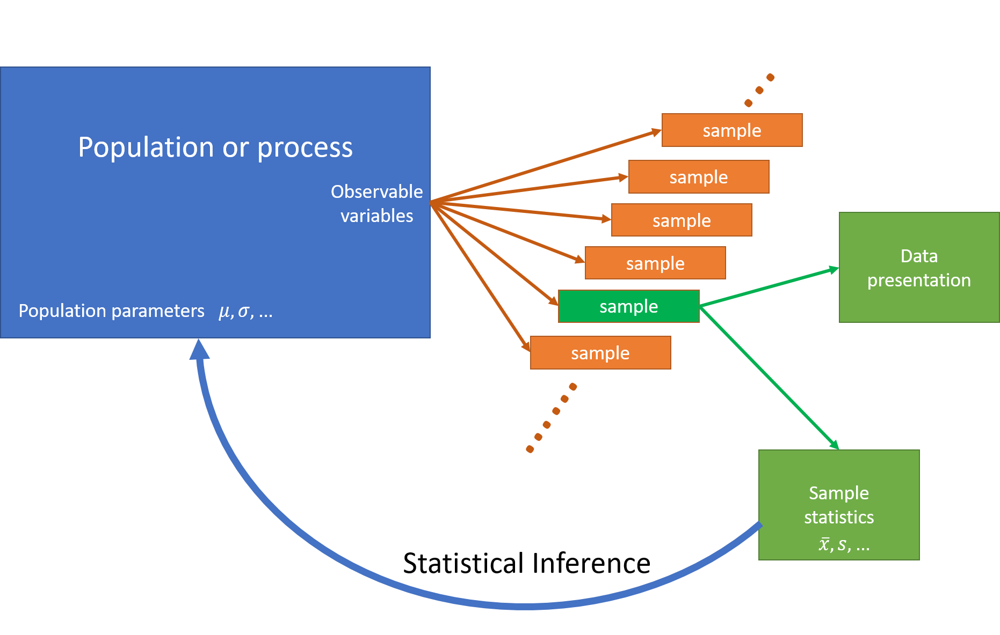
(#fig:statistical-infrence)Statistical Inference
(One exception is when we do a census where we select and get fully accurate data from every member of the population. Then there’s no uncertainty left at all, and our sampling errors are zero.)
When generating simulated datasets we also generate samples. Simulation is often done as a means of testing out statistical ideas and methods, or (in the case of the bootstrap method) when conventional ways of estimating standard errors (and therefore confidence intervals) don’t work.
Before we get into detail of estimation and inference, let’s spend some time thinking about how sampling works.
2.1 Random numbers
In both settings (sampling and simulation) we need to start with a method of generating random numbers. We’ll start by assuming we have some means of generating a random sequence of numbers uniformly distributed in the interval [0,1]: \[ U_i \sim \text{Uniform}(0,1)\qquad \text{for $i=1,2,3, \ldots$} \] Here ‘uniformly distributed’ means that all values in the range [0,1] are equally likely to occur.
In R this is done using the runif() function. For example to generate 5
random draws from Uniform(0,1):
## [1] 0.2875775 0.7883051 0.4089769 0.8830174 0.9404673Another draw will a different set of random numbers:
## [1] 0.0455565 0.5281055 0.8924190 0.5514350 0.4566147If we draw a histogram of 100 draws it looks a bit lumpy:
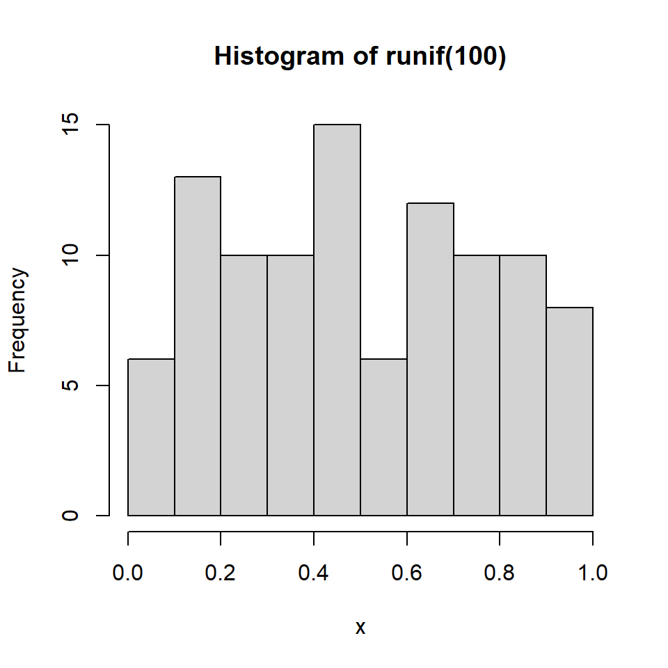
(#fig:unnamed-chunk-7)100 draws from Uniform(0,1)
But a histogram of 100,000 draws is very uniform:
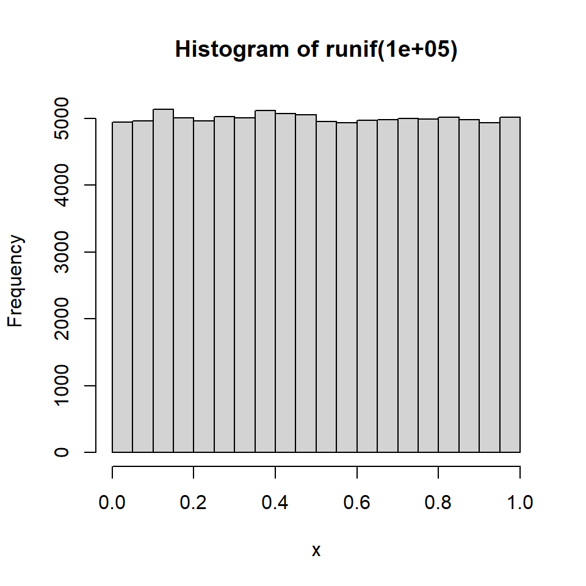
(#fig:unnamed-chunk-8)100000 draws from Uniform(0,1)
Although the numbers appear to be random they are in fact generated using
formulae, so if one knows the formula the sequence of random numbers generated by
runif() is completed predictable. However the formula
is complex enough that there are no easily discernible patterns in sequences of
many millions of draws. These numbers are psuedo-random, but they are
random enough for our purposes.
Underlying the random number generator is a seed value, which initiates the sequence. If we set the seed to a particular value, the sequence of random numbers that will be generated after doing so will always be the same.
## [1] 0.5929813 0.7264811 0.3704220 0.5149238 0.3776632## [1] 0.41833733 0.01065785 0.53229524 0.43216062 0.09368152## [1] 0.55577991 0.59022849 0.06714114 0.04754785 0.15620252## [1] 0.4662952 0.2078233 0.7996580 0.6518713 0.3215092## [1] 0.5929813 0.7264811 0.3704220 0.5149238 0.3776632This property can be very useful when testing and comparing algorithms: we can generate an identical sequence of random numbers and check (for example) that two methods of estimation give the same results on two identical randomly generated datasets.
2.2 Sampling from categorical random variables
Draws from a uniform distribution are all we need to simulate/sample from any distribution.
Heads or tails: if the probability of flipping heads is 0.5,
we can generate n random numbers, and then label any values less
than 0.5 as Heads and the remainder as tails.
## [1] 0.2875775 0.7883051 0.4089769 0.8830174 0.9404673 0.0455565 0.5281055
## [8] 0.8924190 0.5514350 0.4566147## [1] "Heads" "Tails" "Heads" "Tails" "Tails" "Heads" "Tails" "Tails" "Tails"
## [10] "Heads"## y
## Heads Tails
## 4 6##
## Heads Tails
## 5059 4941We can extend this idea to any set of categories.
Red, Green or Blue: Say we have a six sided die: three sides are red, two are green and one is blue.
The probabilities of rolling the three colours are therefore \(\frac12\), \(\frac13\), \(\frac16\) respectively.
These probabilities add to one.
The random variable \(Y\) is the colour that the die shows when we roll it.
## [1] 1In general we might have \(m\) categories, where the probability of that \(Y\) category \(k\) is \(p_k\): \(\Pr(Y=k)=p_k\). and \[ \sum_{k=1}^m p_k = 1 \] We then compute the cumulative probabilities \(c_k\), the partial sums of these probabilities: \[ c_k = \sum_{j=1}^k p_j \] The final cumulative probability \(c_m\) is always 1 by definition.
Implicitly we also have a value \(c_0=0\), which is the the empty sum and always equal to zero.
These cumulative probabilities \(c_k\) are ’the probability that random variable \(Y\) has a category label less than or equal to \(k\): \[ \Pr(Y\leq k) = c_k = \sum_{j=1}^k p_j \]
Red, Green or Blue: the cumulative probabilities are \[\begin{eqnarray*} c_0 &=& 0.0000\\ c_1 &=& p_1 = 0.5000\\ c_2 &=& p_1+p_2 = 0.5000 + 0.3333 = 0.8333\\ c_3 &=& p_1+p_2+p_3 = 0.5000 + 0.3333 + 0.1667 = 1.0000 \end{eqnarray*}\]
## Red Green Blue
## 0.5000000 0.8333333 1.0000000We then take a set of uniform random numbers \(u_1,\ldots,u_n\). We then want to find which of the \(m\) labels corresponds to each random number \(u_i\).
The rule is that if \(u_i\) is less than cumulative probability \(c_k\) but greater than \(c_{k-1}\), then we assign the label \(k\).
There are various ways to do this, here’s a version using case_when() from
the dplyr package:
## [1] 0.37667253 0.92201944 0.99187774 0.97723602 0.23629728 0.10706678 0.03915213
## [8] 0.72802690y <- case_when(u <= cp[1] ~ "Red",
u <= cp[2] ~ "Green",
.default="Blue") # here .default means "otherwise"
data.frame(round(u,5),y)## round.u..5. y
## 1 0.37667 Red
## 2 0.92202 Blue
## 3 0.99188 Blue
## 4 0.97724 Blue
## 5 0.23630 Red
## 6 0.10707 Red
## 7 0.03915 Red
## 8 0.72803 Green## y
## Blue Green Red
## 3 1 4## y
## Blue Green Red
## 0.375 0.125 0.500Note that the categories in the table haven’t come out in the Red-Green-Blue order that we want - instead they’re in the default alphabetical order.
We can fix this by converting y to a factor object:
## y
## Red Green Blue
## 4 1 3Here’s what is really going on: we if we plot the cumulative probabilities as a staircase – a cumulative distribution function (CDF) then we draw \(u_i\) from a Uniform(0,1) distribution, and then find where a horizontal line drawn at the level of \(u_i\) intersects the CDF: and that is the value of the categorical variable \(y_i\).
The larger the probability \(p_k\) the bigger the jump in the staircase, and the larger the probability that category \(k\) will be selected.
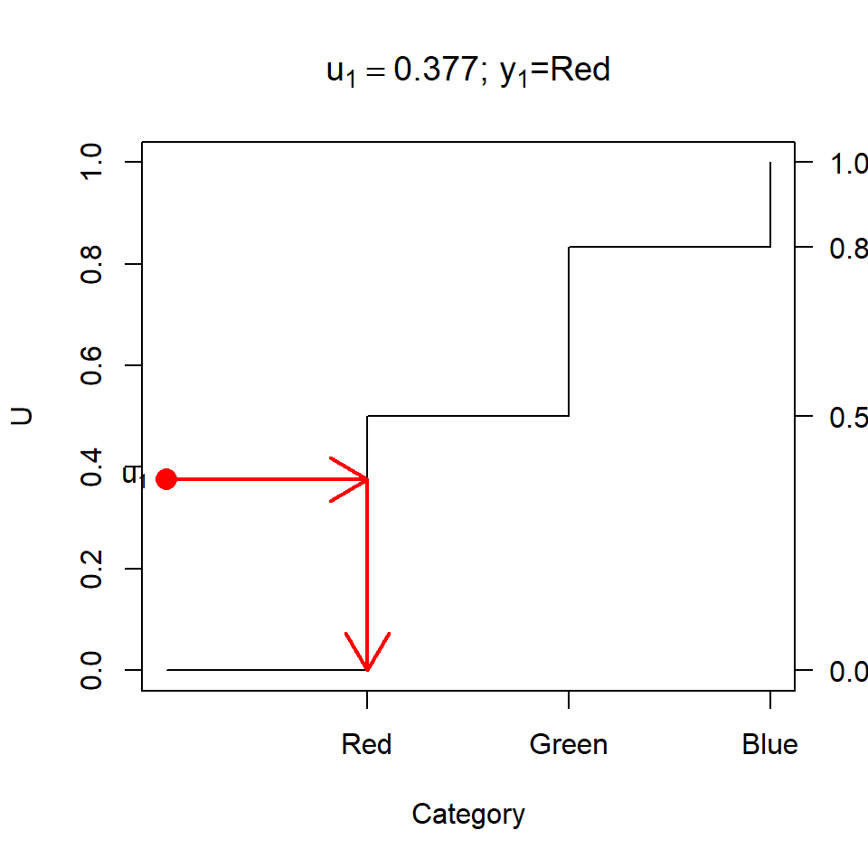
(#fig:unnamed-chunk-19)Drawing a random category
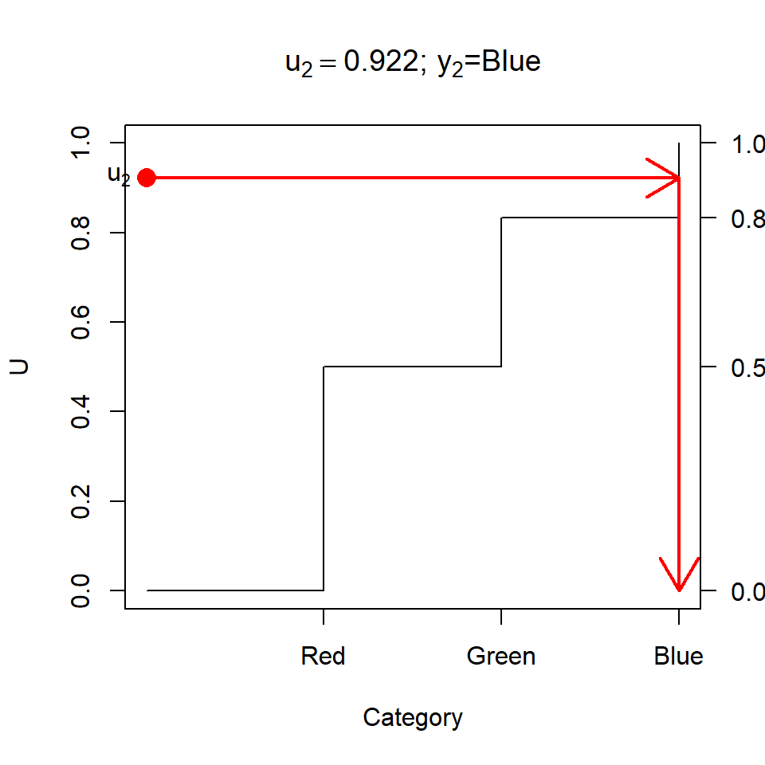
(#fig:unnamed-chunk-20)Drawing a random category
set.seed(112)
n <- 10000
u <- runif(n)
y <- case_when(u <= cp[1] ~ "Red",
u <= cp[2] ~ "Green",
.default="Blue")
y <- factor(y, levels=names(pp))
table(y)## y
## Red Green Blue
## 4976 3336 1688The sample() function implements this conveniently: select from the integers
1 to m
## y
## 1 2 3
## 5014 3350 1636(need replace=TRUE here, see below).
… or state the vector 1:m explicitly
## y
## 1 2 3
## 5010 3371 1619… or directly from the vector of labels …
y <- sample(c("Red","Green","Blue"), size=n, prob=pp, replace=TRUE)
y <- factor(y,levels=names(pp))
table(y)## y
## Red Green Blue
## 4980 3325 1695… get the labels from pp …
## y
## Red Green Blue
## 4994 3389 16172.3 Sampling from discrete numerical random variables
The ideas above carry straight over to discrete numerical random variables.
The Binomial distribution \(Y\sim\text{Bin}(m,p)\) is the number of successes in \(m\) trials where the probability of success on each trial is the same \(p\), and all the trials are independent.
\(Y\) takes values 0 to \(m\), and those probabilities can be calculated by
\[
P(Y=k) = \binom{m}{k} p^k (1-p)^{m-k} = \frac{m!}{k!(m-k)!} p^k (1-p)^{m-k}
\]
R provides these probabilities in the function dbinom()
e.g. \(m=10\) rolls of a six-sided die, and \(Y\) is the number of times we get a 1, so \(p=1/6\)
## [1] 1.615056e-01 3.230112e-01 2.907100e-01 1.550454e-01 5.426588e-02
## [6] 1.302381e-02 2.170635e-03 2.480726e-04 1.860544e-05 8.269086e-07
## [11] 1.653817e-08barplot(pp, names=0:m,
xlab="y", ylab="Pr(Y=y)",
main=bquote("Bin("*.(m)*","*.(sprintf(" %.4f",p))*")"))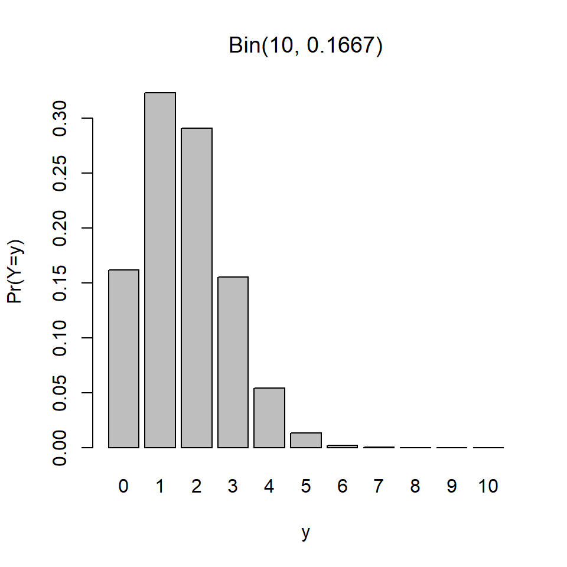
(#fig:unnamed-chunk-27)Binomial probabilities
The CDF is given by the function pbinom()
plot(0:m, cp, type="s",
xlab="y", ylab="Pr(Y<=y)",
main=bquote("Bin("*.(m)*","*.(sprintf(" %.4f",p))*")"))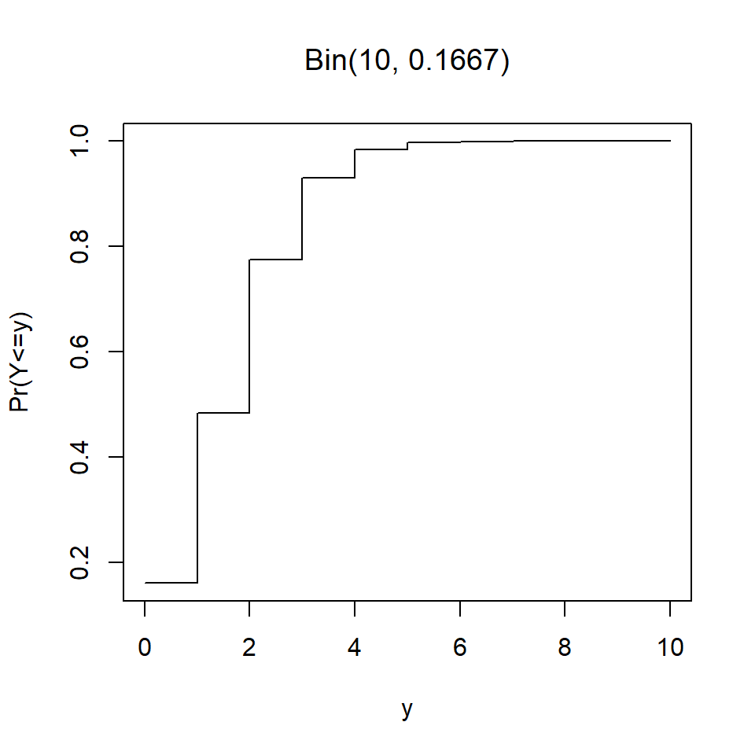
(#fig:unnamed-chunk-29)Binomial CDF
Drawing a single value of \(Y\) proceeds the same way as for a categorical variable:
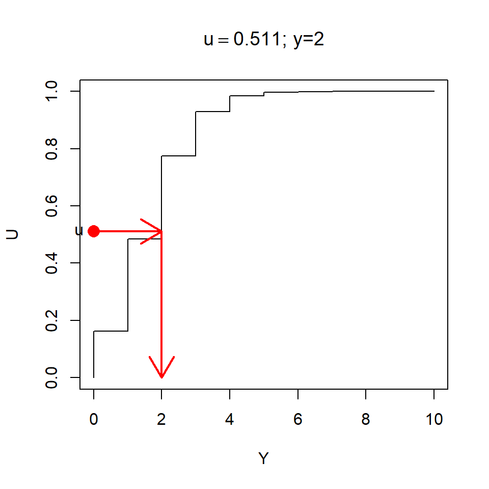
(#fig:unnamed-chunk-30)Drawing from a Binomial(10,1/6) distribution
So we can draw multiple values of \(Y\) from Bin(10,\(\frac16\))
using the sample() function:
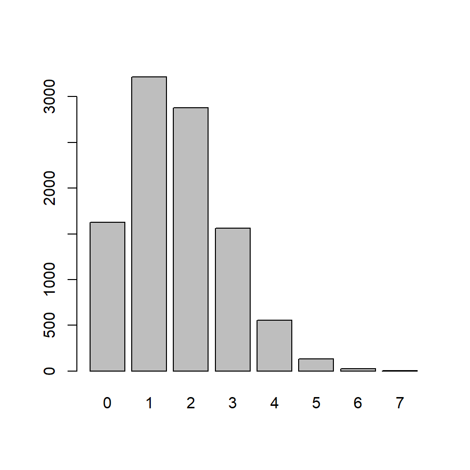
(#fig:unnamed-chunk-31)10000 draws from a Binomial(10,1/6)
Of course R provides a specific function for doing the same thing: rbinom()
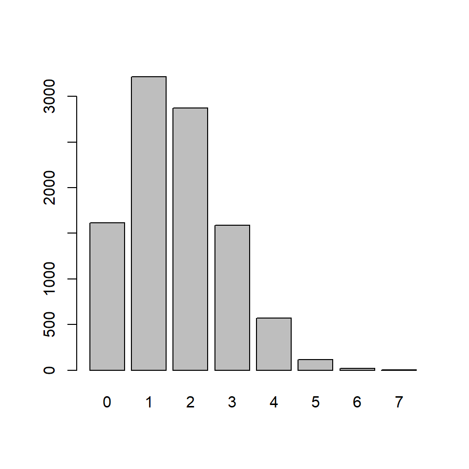
(#fig:unnamed-chunk-32)10000 draws from a Binomial(10,1/6)
But that function is just doing what we’ve described above using sample().
A particular common example is where we have \(m\) objects and want to select one of them at random, with each object having equal probability of being selected: i.e. each has probability \(1/m\).
2.4 Sampling from continuous random variables
Continous random variables are simulated using the same principle.
The cumulative distribution function (CDF) of a continuous random variable \(Y\) is defined to be \[ F(y) = \Pr(Y\leq y) = \int_{-\infty}^y f(y')\;{\rm d}y' \]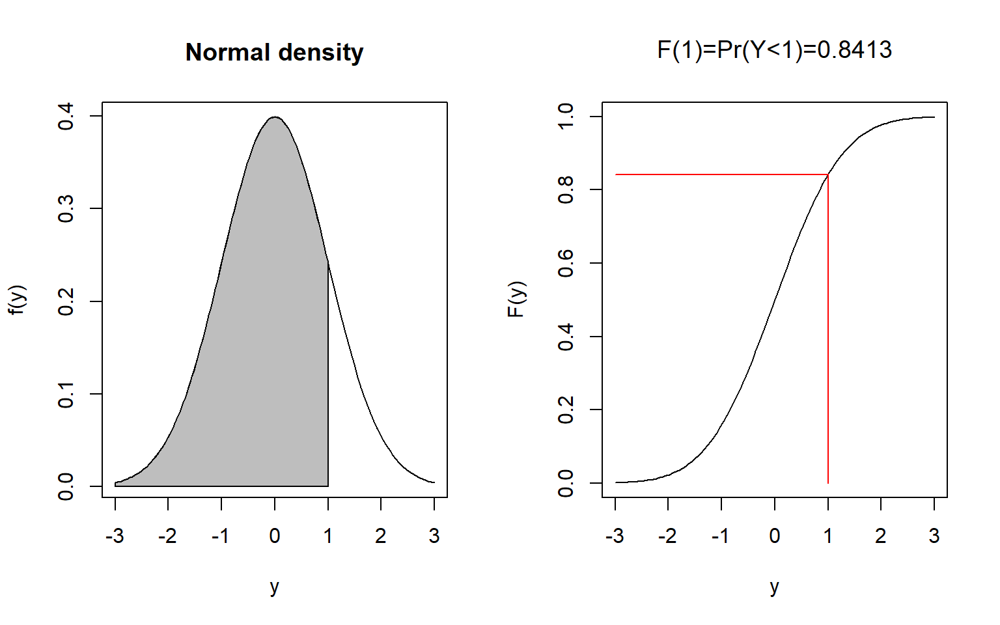
(#fig:unnamed-chunk-33)Normal distribution density and CDF
We can use \(F(y)\) to draw a random value from the distribution of \(Y\) by first drawing a random value \(U\) from a Uniform(0,1) distribution.
We then solve the equation \[ U = F(y) \] for \(y\): i.e. find the value of \(y\) corresponding to a CDF value of \(U\).
For many standard distributions (including the Normal and Gamma distributions) there is no analytic formula which gives the solution for \(y\) given \(u\): but there are numerical approximations which can be used in those settings.
One simple case which does have an analytic solution is the Exponential distribution \(Y\sim\text{Exp}(\lambda)\). This is a one parameter distribution where \(Y\) is non-negative (\(Y\geq 0\)), and can be used to model cases such the length of time it takes for an event to occur (e.g. the length of time for a radioactive nucleus to decay). The single parameter \(\lambda\) is the rate (e.g. number of radioactive decay events per unit time).
The exponential distribution has probability density function \[ f(y) = \lambda e^{-\lambda y}\qquad \text{where $y\geq 0$} \] and has mean \(E[Y]=1/\lambda\).
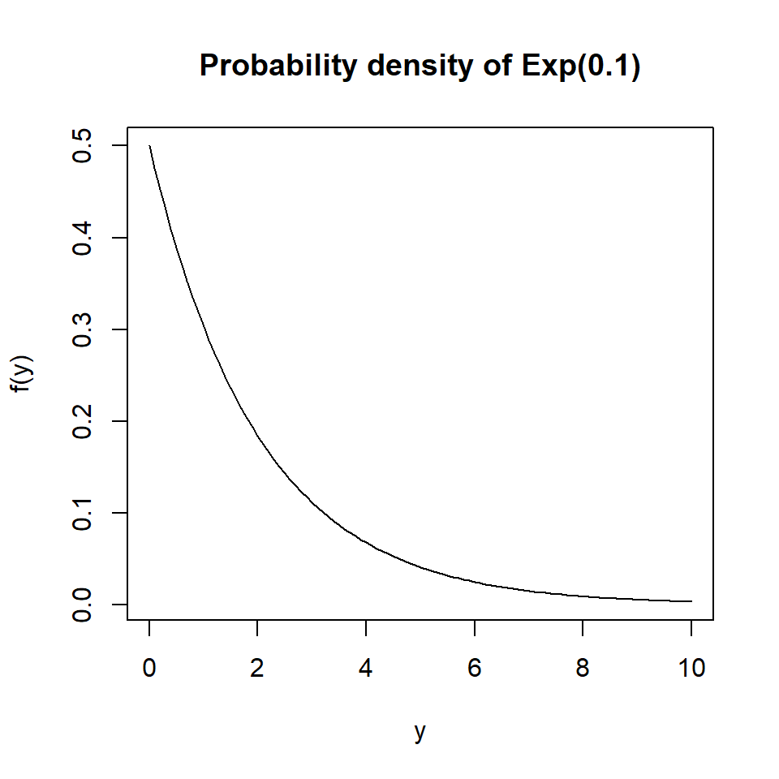
(#fig:unnamed-chunk-34)Exponential probability distribution
The CDF is the integral of the probability density function \[ \Pr(Y\leq y) = F(y) = \int_0^y f(y)\,{\rm d}y \] which for the Exponential distribution is \[ F(y) = \int_0^y \lambda e^{-\lambda t} {\rm d}t = 1 - e^{-\lambda y} \]
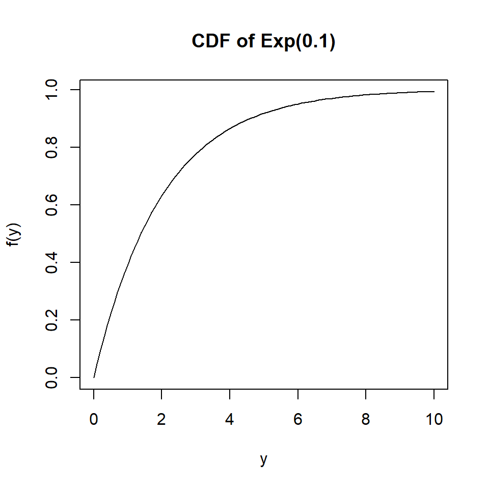
(#fig:unnamed-chunk-35)Exponential cumulative probability distribution
Solving \[ u = F(y) = 1-e^{-\lambda y} \] for \(y\) leads to \[ y = -\frac{1}{\lambda}\log(1-u) \]
Using this function we can easily draw directly from an Exponential distribution.
## [1] 1.990456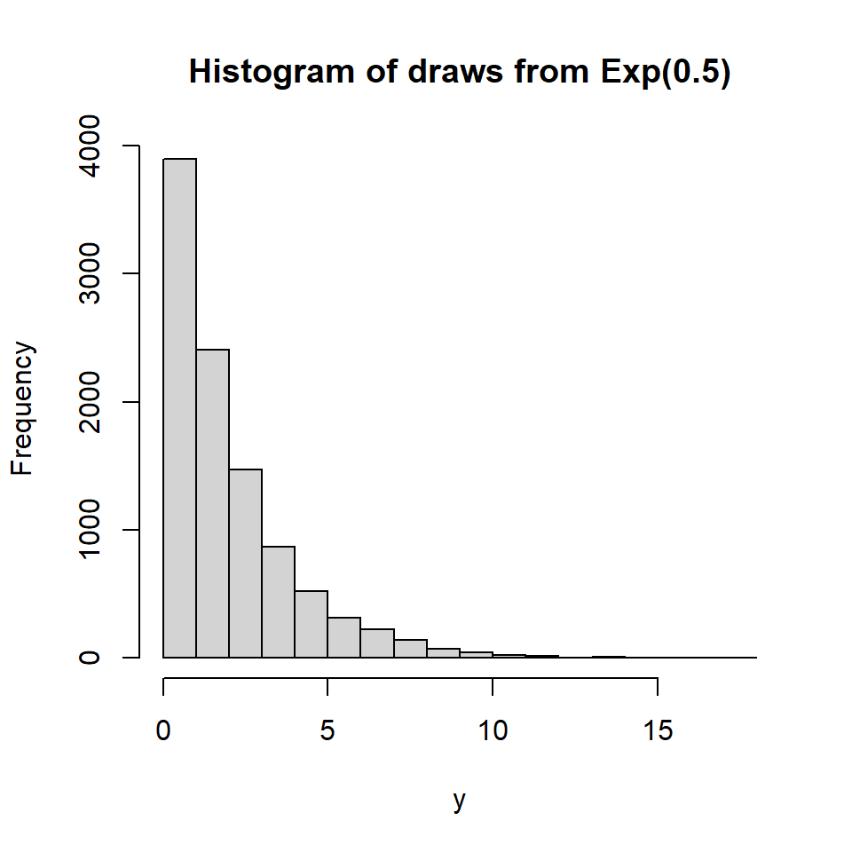
(#fig:unnamed-chunk-36)10000 draws from an Exponential distribution
2.5 Sampling from a finite collection
The simulations discussed so far all draw from infinite populations: we can set the sample size \(n\) to any value. However it often occurs that we have only a finite population - e.g. when drawing a random sample of students from a class, or households from a suburb for interview. Then the population size \(N\) is finite.
In the general case we have a set of \(N\) units (i.e. students or households) in a population of finite size, and we want to draw a sample of \(n\) of these units.
We usually start by listing or enumerating the units. This list is called a frame or a sample frame.
Consider the case where we have a small street containing \(N=10\) houses, numbered 1-10. We want to select 5 of these houses with equal probability. There are a number of ways we could do this.
2.5.1 Sampling without replacement
If the houses have equal probability then we could proceed as follows:
- We draw a random number from 1-10, e.g. house number 2, and mark it as selected
- We draw another random number from 1-10, e.g. house number 5, and mark it as selected
- We repeat this process, but if we choose a house that is already selected, we discard that selection;
- The process continues until we have a set of 5 distinct houses.
At the start we take our frame (i.e. list) of houses, and initially mark them all as unselected. Then at each step where we successfully select a previously unselected house we mark that house as selected.
bigN <- 10 # population size
frame <- data.frame(house=1:bigN, selected=FALSE)
n <- 5 # sample size
nselected <- 0
while(nselected < n) {
i <- sample(bigN, 1) # sample a single number at random from 1:bigN with equal probability
if(!frame$selected[i]) {
frame$selected[i] <- TRUE
nselected <- nselected + 1
}
}
frame$house[frame$selected]## [1] 1 6 7 8 10It’s not guaranteed how many steps this process is going to take, since the number of times we select a house that has already been selected is random. If the sample size \(n\) is small and the population size \(N\) is large then it will take \(n\) steps, or possibly just a few more. If \(n\) is close to \(N\) and \(N\) is large, it could take a very very long time.
A simpler way to solve this is to assign each house a distinct random number between 0 and 1, and then sort the frame in order of the random numbers.
bigN <- 10 # population size
frame <- data.frame(house=1:bigN, selected=FALSE)
n <- 5 # sample size
frame$u <- runif(bigN)
frame <- frame[order(frame$u),]
frame$selected[1:n] <- TRUE
frame## house selected u
## 9 9 TRUE 0.0812427
## 4 4 TRUE 0.3739315
## 2 2 TRUE 0.4137952
## 6 6 TRUE 0.4341604
## 10 10 TRUE 0.4909159
## 3 3 FALSE 0.5850114
## 8 8 FALSE 0.8708720
## 5 5 FALSE 0.8837804
## 1 1 FALSE 0.9278206
## 7 7 FALSE 0.9475266## [1] 2 4 6 9 10Of course, the simplest way of all is just to use the sample() function
## [1] 10 4 6 3 2It’s very often that we do have a frame, a list of objects with names, and we want to select from this at random.
frame <- data.frame(Name=c("Mark","Chloe","Sam","Caitlin","Harry","Nina"),
Age=c(20,19,18,19,19,21),
Major=c("STAT","STAT","DATA","COMP","MATH","STAT"))
frame## Name Age Major
## 1 Mark 20 STAT
## 2 Chloe 19 STAT
## 3 Sam 18 DATA
## 4 Caitlin 19 COMP
## 5 Harry 19 MATH
## 6 Nina 21 STATWe can select, say, 3 names
## [1] "Nina" "Sam" "Mark"and then subset the frame
## Name Age Major
## 1 Mark 20 STAT
## 3 Sam 18 DATA
## 6 Nina 21 STATIf you like dplyr
## Name Age Major
## 1 Mark 20 STAT
## 2 Sam 18 DATA
## 3 Nina 21 STATNote we can find out where in the frame particular individuals are located
## [1] 1 5If we’re sampling without replacement, note (of course) that the sample size can be no bigger than the population size \(n\leq N\).
2.5.2 Sampling with replacement
When selecting a sample of 5 houses it makes sense not to allow the possibility
of selecting the same house twice. So when we’ve selected a house we remove
it from the list of houses available to select. When using sample() this means
that we set replace=FALSE, meaning after we’ve selected a member of the population
we don’t put it back again.
But there are occasions where we select with replacement is the sensible thing to do. This means there is a chance where a unit can be selected more than once, and this occurs in situations where we want to assign different probabilities of selection to different units of the population.
Starting with the the case of equal probabilities, we repeatedly draw units from the population under identical circumstances: on every draw each unit is available for selection, and we count how many times each unit is selected.
## [1] 4 3 9 5 3In this sample we’ve drawn Unit 3 twice.
If \(n\) is small and \(bigN\) is large the probability of repeats is small. But if a repeat happens we of course do not make our selected household repeat the questionnaire, instead we count them twice (or as many times as they are selected) in our analysis.
Imagine our sample of 10 houses aren’t actually just houses, they’re farms, and some of them are very large and some are very small. We want to give the large farms a high chance of selection.
set.seed(122)
bigN <- 10
n <- 5
frame <- data.frame(farm=1:10, ncows=c(1000,5000,2000,500,500,
5000,500,5000,30000,100))
frame## farm ncows
## 1 1 1000
## 2 2 5000
## 3 3 2000
## 4 4 500
## 5 5 500
## 6 6 5000
## 7 7 500
## 8 8 5000
## 9 9 30000
## 10 10 100## [1] 2 2 9 9 9Unsurprisingly, the very large farm number 9 has been selected three times here.
It is possible to have unequal probability sampling without replacement, estimation of standard errors is complicated in such designs, so we won’t be using such designs.
For now, just note that we switch to with replacement designs when we’re sampling from sets of units where want to have units with different probabilities of selection.
3 Sample Surveys
A sample survey is an exercise in which data are collected from a sample (a subset) or a population. The data collected are used to create estimates of the characteristics or parameters of the population.
Some examples:
- A sample of voters are telephoned to ask their voting intentions, with the aim of predicting the outcome of the election;
- A sample of sites in a river catchment is tested for the presence of algae to determine the spread of the algae throughout the entire catchment;
- A sample of households is selected, and the residents asked about their employment status, in order to estimate the national unemployment rate.
A census is a special case of a sample survey in which every member of the population is surveyed.
3.1 The Survey Process
The different steps in the survey process are shown in Figure @ref(fig:survey-process1).

(#fig:survey-process1)The Survey Process
- Every survey has a set of objectives – the particular populations which are of interest;
- These parameters are properties of the target population: the population about which estimates are to be made;
- Not all members of the target population are able to be identified: the ones that can be surveyed make up the survey population;
- The sample frame is a listing of all members of the survey population;
- The sample design is the method of selecting the sample from the frame. The sample size is usually decided as a compromise between the required accuracy of estimates and the survey costs and other constraints (e.g. the time available for the survey);
- survey instrument is the means of data collection. It is usually a paper or electronic questionnaire, completed by the respondent or the interviewer/observer. The instrument aims to measure the properties of the sample members which mean that the desired population characteristic can be estimated. The instrument must be valid (it must actually measure what it intends to measure) and reliable (repeated measurements of the same sample member under identical circumstances should always yield similar results);
- The sample members are contacted and recruited into the sample. Not all selected members will be able to be contacted (even after strenuous efforts), and some will not respond even if contacted;
- The data are collected from the sample members in some mode (e.g. face-to-face, telephone, web, observational, …);
- The data collected are captured (stored on a computer); coded (converted into standard classification systems); edited (checks for data consistency); and stored in a final dataset;
- The data may be adjusted, e.g. imputation or weight adjustments for nonresponse may be done;
- Estimates of the parameters of interest are constructed, and other analysis of the data is carried out (e.g. regression estimation, comparison with other data etc.);
- The results are summarised in a report;
- The original data may be archived in some appropriate form, or destroyed;
- A post-survey evaluation may be made to determine how well the survey met its goals.
For example: The Household Labour Force Survey (HLFS).
- One of the main objectives of the HLFS is to estimate the unemployment rate every quarter;
- The target population is the working age population of New Zealand;
- The survey population is the civilian, non-institutionalised usually resident population of adults aged 15+ living in permanent, private dwellings on the main islands of New Zealand (North Island, South Island and Waiheke Island);
- The sample frame is a list of dwellings created at the most recent census and regularly updated to reflect changes;
- The sample design is a stratified cluster design. Within each regional government area a sample of small areas (PSUs) is selected. A sample of households is selected from within each PSU. Every adult from the selected households is surveyed. 15000 households and 30000 adults are surveyed every three months, in order to create unemployment estimates accurate to within \(0.5\)%.
- The survey instrument is an electronic questionnaire.
- The interviewers contact the households in person or by telephone, making up to 10 call backs to ensure contact is made. Proxy responses are permitted (i.e. one household member can respond on behalf of another). The interview takes place by computer assisted personal or telephone interviewing (CAPI or CATI).
- The results are post-stratified to match the current population estimates in each local government area;
- Estimates of the unemployment rate are published within about 6 weeks of the end of the quarter.
3.2 Populations and Frames
The target population defines the scope of the survey: the set of units which make up the population in which we are interested.
The sample frame is a method of gaining access to the members of the target population. It is an actual or conceptual list. However it may not be perfect (Figure @ref(fig:scope-coverage)).
- Not all members of the target population will appear on the sample frame: the missing units are out of coverage;
- Not all units listed on the sample frame are members of the target population: the extra units are out of scope.
- The survey population are those units which are both in the target population (in scope) and on the frame (in coverage).
Our aim is to have a sample frame which covers most if not all of the target population, and which has only very few out of scope units.
The reason for this is very important: we can make estimates about units in a population only if they are included in the sample frame. This inference is possible whether or not we select them. If there is a subpopulation of units that is not on our frame (i.e. they are out of coverage) then we can never select them, we can never learn anything about them, and therefore we cannot make inferences about them.
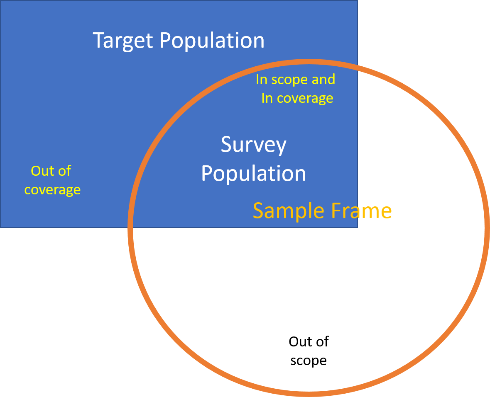
(#fig:scope-coverage)Scope and Coverage
3.2.1 What is a sampling frame?
The sampling frame is a key element in the survey process which provides the basis from which a random (probability based) sample can be selected. The purpose of having a sampling frame is to enable each member of the target population a nonzero probability of being selected to participate in the survey. The quality of the data, from a survey which has as its basis a comprehensive frame, can be measured and controlled.
The term sampling frame is sometimes misunderstood, often being thought of as a list containing each member of the population. In fact that is more a description of an `ideal’ sampling frame. The best way to show what a sampling frame can be in practice is to examine some examples:
List Frames. Good up-to-date lists make ideal frames. However lists of units (electoral rolls, telephone listings etc.) are generally formed for purposes other than for use as sampling frames. For this reason they are often not close to `ideal’ sampling frames. Some discussion of list frame problems comes later.
Multi-stage Sampling Frames. These frames consist of a set of lists which are arranged in a hierarchy of stages. For example a typical household survey frame will be organised like so: The first list is a a set of non-overlapping geographic areas from which a sample of areas is taken. For example we may list all the local regional councils and take a sample of them. Within these areas we might then list all the households and take samples from the household lists. From each household we would then list the residents and interview selections of them. Note that we do not have to list the entire population. The only comprehensive list needed is the list of the areas which will be quite small. By giving each area a chance of being selected we ensure each person living in each area has a chance of selection.
Continuous Sampling Frames. Consider the population of people entering a country from international flights. Suppose we choose a random number between one and ten (\(=k\)) and then interview the \(k\)th, \((k+10)\)th, \((k+20)\)th … persons who file through customs. We will have a sample where every person has had a 1 in 10 chance of being selected. But what is the frame? There is no list. We call such a situation a `conceptual list’, where the people filing into the country effectively formed a long queue of people which we have treated like a listing of the population, although a listing of names was never constructed. \end{description}
One can find many different definitions of sampling frames. The following is a simplified definition that should serve our purposes:
A sampling frame is part of the system of rules and procedures used when determining who is to be surveyed and which ensure that each member of the population get some measurable (non-zero) chance of participating in the survey.
The examples above show that we need to think beyond the concept of a list of units, whose construction is a separate exercise from the other survey stages.
3.2.2 What is a good sampling frame?
We will often have several frames available and will have to decide between different options. To help us with this decision we need to be a little more specific about what makes a good sampling frame. The first thing we should consider is the effective coverage of the sampling frame. This can be determined by testing it for the following properties:
Each unit should be counted at least once. If there are missing units (out of coverage) then the survey results may be biased if the excluded units tend to be different to the units which are included.
Each unit should be counted only once. The problem is that we usually can not tell how many times a unit is duplicated. This means we can not tell how many chances a unit has of being sampled. This can cause similar bias if the units which are duplicated are different to the other units. The results will be biased towards the duplicated sub-group of the population.
Each unit should be distinguishable from the other units on the frame. If we select a unit from the frame (say Jane Smith) but then can not tell who this refers to, when there are many Jane Smiths in the population, then the frame has not done its job.
Should provide up-to-date information about the units. For example it if it claims to provide Jane Smith’s address it should be the current address.
No units should be there if they are not meant to be. Extra units (out of scope) are not a serious problem unless we fall into the elementary error of replacing them whenever we come across them in the sample. This confuses selection probabilities. The correct procedure is to drop any ineligible unit found in the sample and not replace them.
Should allow direct access to each unit. Ideally the frame will ultimately supply us with a list of the units we are interested in analyzing. Sometimes a frame will only give samples of groups of units e.g. a list of addresses, each of which may contain many people. Further work is needed before a sample of people is realized.
3.3 Approaches to sampling
We’re talking here about random sampling, or probability sampling. For the purposes of statistical inference such sampling is the only defensible method - it’s the only one that leads us to properly constructed confidence intervals and hypothesis tests. Other approaches do exist though, and even though you’ll see them used they all have significant defects.
- Probability sampling is the gold standard: every member of the population has a known, non-zero chance of selection;
- Purposive sampling: the surveyor selects members of the population that they consider to be representative - dangerously biased towards the views and prejudices of the surveyor;
- Haphazard sampling: the surveyor uses any members of the population that they come across. This is what happens on the street corner when you’re asked questions by a surveyor;
- Quota sampling: resembles stratified sample (see later): the surveyor fills quotas of respondents to balance numbers of respondents in categories (e.g. by age/gender/ethnicity), but does not make an accounting for non-response (see later);
- Snowball sampling: used in rare populations that are highly connected (e.g. refugees from a particular country): existing sample members recruit new sample members using their contacts;
- Self-selected sampling: this is the worst of all: the respondents themselves decide whether to be selected: they see an advertisement on a webpage or phone in with their views. Only profiles motivated population members - the silent majority are never measured.
3.4 Example datasets
We’ll use and re-use a number of standard datasets.
3.4.1 API
This is a dataset on Student performance in California schools. The dataset is distributed with the survey library in R, and there are a number of unit record datasets which are drawn from a population dataset apipop under various sample designs. The population units are the schools, and a number of characteristics are available. Full documentation can be found in the survey package. The variables we use mostly are:
stype- School type (Elementary/Middle/High School)snum- School numberdnum- District numberapi99- Academic Performance Indicator for the school in the year 1999api00- Academic Performance Indicator for the school in the year 2000sch.wide- Did the school meet its school-wide growth target?awards- Is the school eligible for an awards programmeals- Percentage of students eligible for subsidised mealsell- Percentage of students that are English Language Learnersgrad.sch- Percentage of students with parents with a postgraduate educationenroll- Number of students enrolledapi.stu- Number of students tested in the API
4 Statistical Inference
\(\DeclareMathOperator*{\argmin}{argmin}\) \(\newcommand{\var}{\mathrm{Var}}\) \(\newcommand{\bfa}[2]{{\rm\bf #1}[#2]}\) \(\newcommand{\rma}[2]{{\rm #1}[#2]}\) \(\newcommand{\estm}{\widehat}\)
4.1 Inference in infinite populations
Let’s briefly review a few familiar results from earlier statistics courses.
Most of what we’ve done in earlier courses has assumed that we have a simple random sample from an infinite population.
We’ll use data from the starwars dataset (in the dplyr package). There
are data on 87 characters, including their heights in centimetres.
Six heights are missing, but let’s just guess them so we have no missing data
(this process of inventing data has a respectable name: ‘imputation’,
and we’ll come back to it later).
## [1] 6starwars <- starwars |>
mutate(height=case_when(name=="Arvel Crynyd" ~ 172, # same as Luke
name=="Finn" ~ 172, # same as Luke
name=="Rey" ~ 150, # same as Leia
name=="Poe Dameron" ~ 172, # same as Luke
name=="BB8" ~ 96, # same as R2D2
name=="Captain Phasma" ~ 167, # same as C3P0
.default=height))The mean height \(\bar{Y}\) of characters in the Star Wars universe is a population parameter. We can estimate it from a sample of characters.
Note: we’re using capital letters for population parameters (\(\bar{Y}\) is the population mean), and lower case letters for sample statistics (\(\bar{y}\) is the sample mean).
It’s also common to see Greek letters for population parameters (e.g. \(\mu\) for the population mean), upper case latin letters for random variables, and lower case latin letters for sample statistics.
For the purposes of this exercise let’s imagine there are only \(N=87\) individuals in the entire Star Wars universe. Let’s draw a random sample of \(n=20\) from this population of \(N=87\):
set.seed(222)
bigN <- nrow(starwars)
n <- 20
samplemembers <- starwars[sample(bigN, n, replace=FALSE),]
samplemembers |>
dplyr::select(name,height,mass,hair_color,homeworld) |>
kbl() |>
kable_styling()| name | height | mass | hair_color | homeworld |
|---|---|---|---|---|
| Tarfful | 234 | 136 | brown | Kashyyyk |
| Jek Tono Porkins | 180 | 110 | brown | Bestine IV |
| Bossk | 190 | 113 | none | Trandosha |
| Lando Calrissian | 177 | 79 | black | Socorro |
| IG-88 | 200 | 140 | none | NA |
| Kit Fisto | 196 | 87 | none | Glee Anselm |
| Biggs Darklighter | 183 | 84 | black | Tatooine |
| Obi-Wan Kenobi | 182 | 77 | auburn, white | Stewjon |
| Quarsh Panaka | 183 | NA | black | Naboo |
| Mace Windu | 188 | 84 | none | Haruun Kal |
| Ratts Tyerel | 79 | 15 | none | Aleen Minor |
| Beru Whitesun Lars | 165 | 75 | brown | Tatooine |
| Chewbacca | 228 | 112 | brown | Kashyyyk |
| Jabba Desilijic Tiure | 175 | 1358 | NA | Nal Hutta |
| Rugor Nass | 206 | NA | none | Naboo |
| Sly Moore | 178 | 48 | none | Umbara |
| Dormé | 165 | NA | brown | Naboo |
| Leia Organa | 150 | 49 | brown | Alderaan |
| Finn | 172 | NA | black | NA |
| Darth Maul | 175 | 80 | none | Dathomir |

(#fig:starwarssample)Histogram of heights of a sample of Star Wars characters (vertical line at the sample mean)
Compute the sample mean \(\bar{y}\) and standard deviation \(s_y\):
## [1] 180.3## [1] 31.13147We know how to make a point estimate \(\widehat{\bar{Y}}\) for the population mean \(\bar{Y}\) (remember that a hat \(\widehat{.}\) over a symbol indicates an estimate of that parameter): the population mean is estimated by the sample mean \(\bar{y}\): \[ \widehat{\bar{Y}} = \bar{y} = 180.3 \] and a 95% confidence interval is given by \[\begin{eqnarray} \widehat{\bar{Y}} \pm \bfa{MOE}{\widehat{\bar{Y}}} &=& \widehat{\bar{Y}} \pm T^\ast_{n-1}\times \bfa{SE}{\widehat{\bar{Y}}}\\ &=& \bar{y} \pm T^\ast_{n-1}\times\frac{s_y}{\sqrt{n}}\\ &=& 180.3 \pm 2.09 \times \frac{31.1}{\sqrt{20}}\\ &=& 180.3 \pm 2.09 \times 6.96\\ &=& 180.3 \pm 14.6\\ &=& (165.7,194.9) \end{eqnarray}\]
Here:
- \(\bfa{SE}{\widehat{\bar{Y}}}\) is the standard error or sampling error of the estimator \(\widehat{\bar{Y}}\) of the population mean \(\bar{Y}\);
- \(T^\ast_{n-1}\) is the quantile of the \(t-\)distribution with \(n-1\) degrees of freedom so that the interval \([-T^\ast_{n-1},+T^\ast_{n-1}]\) encloses 95% of the probability of the \(t-\)distribution;
- \(\bfa{MOE}{\widehat{\bar{Y}}}\) is the margin of error, the half-width of the confidence interval, and is the standard error scaled by \(T^\ast_{n-1}\).
This is what is known as a model based estimate, the statistical model being \[\begin{equation} y_i = \mu + \varepsilon_i \qquad \text{where $\varepsilon_i\overset{\rm iid}{\sim} N(0,\sigma^2)$} (\#eq:simplelinearmodel) \end{equation}\] There are just two parameters here: the population mean \(\mu\), and the population standard deviation \(\sigma\).
We can fit this simplest of all linear regression models using the lm() function and
get the same results:
##
## Call:
## lm(formula = height ~ 1, data = samplemembers)
##
## Residuals:
## Min 1Q Median 3Q Max
## -101.30 -6.05 0.70 11.20 53.70
##
## Coefficients:
## Estimate Std. Error t value Pr(>|t|)
## (Intercept) 180.300 6.961 25.9 2.77e-16 ***
## ---
## Signif. codes: 0 '***' 0.001 '**' 0.01 '*' 0.05 '.' 0.1 ' ' 1
##
## Residual standard error: 31.13 on 19 degrees of freedom## 2.5 % 97.5 %
## (Intercept) 165.73 194.87Here (Intercept) is the estimate for \(\mu\), the population mean.
The ‘residual standard error’ in the R output is actually what we’d rather
call \(\widehat{\sigma}\), our estimate of the standard deivation \(\sigma\).
The confidence interval is only valid if the model in equation @ref(eq:simplelinearmodel) holds: i.e. if the data are normally distributed about the mean. The histogram in Figure @ref(fig:starwarssample) suggests that this is not the case however, since there is a clear outlier at low height.
The Central Limit Theorem (CLT) tells us that if \(n\) is large enough then our estimate for \(\mu\) is useable, and its confidence interval realistic, even if the model in equation @ref(eq:simplelinearmodel) doesn’t actually hold.
The CLT enables much of statistcal practice to yield meaningful results even without our knowing the true data generation model.
In this course most of the examples will have sample sizes large enough that the CLT will mean our results are valid. In these cases when constructing a confidence interval it will be sufficient to replace \(T^\ast_{n-1}\) with the equivalent \(Z^\ast=1.96\) from the Normal distribution.
4.2 Inference in finite populations
Recall that the standard error of an estimate is the variability of estimates between different samples: in fact it is defined as the standard deviation of all possible estimates from all possible estimates drawn using the same sample design.
In an infinite population there are an infinite number of possible samples.
However in a finite population that isn’t the case. In a population of size \(N\) if we draw a simple random sample without replacement of size \(n\) there are \[\begin{eqnarray} \binom{N}{n} &=& {}^NC_n\\ &=& \frac{N!}{n! (N-n)!}\\ &=& \frac{N\times (N-1)\times (N-2)\times ... \times (N-n+1)}{ n\times (n-1)\times (n-2)\times ... \times 1} \end{eqnarray}\] possible samples: i.e. the number of ways it is possible to draw \(n\) objects from a collection of \(N\) without regard to the order they are selected.
In our example of selecting \(n=20\) from \(N=87\) there are an astronomical number of possible samples: \[ \binom{87}{20} = \frac{87!}{20!67!} = 2.38\times 10^{19} \] There is of course only one way to select a census though: \[ \binom{87}{87} = \frac{87!}{87!0!} = 1 \] (using the at first face slightly annoying definition 0!=1). Since there’s only one possible sample when we’re drawing a census the variation among sample estimates from different samples is zero: i.e. the standard error is zero.
It’s also true that if \(n\) is close to \(N\) then sample estimates hardly differ from one another.
We clearly need a modification of our standard error formula \[ \bfa{SE}{\widehat{\bar{Y}}} = \frac{s_y}{\sqrt{n}} \qquad \text{(Infinite population)} \] to allow for sample sizes \(n\) being close to the population size.
That modification is the finite population correction (fpc): \[ \bfa{SE}{\widehat{\bar{Y}}} = \sqrt{1-\frac{n}{N}}\times\frac{s_y}{\sqrt{n}} \qquad \text{(Finite population)} \] The factor \(\sqrt{1-n/N}\) squashes the standard error to zero in the case that \(n=N\), but for very small \(n\) has a value close to 1, and makes no difference at all.
In our example we had a standard error of \[\begin{eqnarray} \bfa{SE}{\widehat{\bar{Y}}} &=& \frac{s_y}{\sqrt{n}}\\ &=& \frac{31.1}{\sqrt{20}}\\ &=& 6.96 \end{eqnarray}\] If we incorporate the fpc this becomes \[\begin{eqnarray} \bfa{SE}{\widehat{\bar{Y}}} &=& \sqrt{1-\frac{n}{N}}\times\frac{s_y}{\sqrt{n}}\\ &=& \sqrt{1-\frac{20}{87}}\frac{31.1}{\sqrt{20}}\\ &=& 0.8776 \times \frac{31.1}{\sqrt{20}}\\ &=& 6.11 \end{eqnarray}\] This narrows the confidence interval for the estimate of the population mean height from (165.7,194.9) to (167.5,193.1).
This is a design based confidence interval, in which it is the sample design which foremost in our derivation of standard errors.
There is quite a lot of theory behind derivation of standard errors in the complex designs which arise in sample surveys.
The survey package in R implements the consequences of sample designs which will
mean we can use the theory without having to derive it.
For example here’s a call to some survey package functions which
gives us the effect of the fpc in our example:
samplemembers$bigN <- bigN
ss <- svymean(height~1, design=svydesign(ids=~1, fpc=~bigN, data=samplemembers))
ss## mean SE
## height 180.3 6.1089## 2.5 % 97.5 %
## height 168.3268 192.2732If you’re interested in the theory take a look at a text like Cochran (1977) or Särndal, Swensson, and Wretmann (1992).
4.3 The survey inference process
Sampling begins with the sample frame - usually this is a list of the members, or units, which make up the population.
The list contains at minimum some identifier of each unit, which enables it to be found/contacted/measured once it has been selected, and possibly a lot of other information too.
Data that we have on the frame is called auxiliary information: it is data that is available about a unit whether or not it has been sampled. Some sample designs rely on this auxiliary data during the process of sample selection.
In probabilistic (random) sampling each unit \(i\) has a known nonzero chance of selection \(\pi_i\), which may depend on the auxiliary data in some way. These probabilities don’t have to be equal, just known and nonzero.
In random sampling we generate a random variable \(I_i\) for each population member, based on the sample design, to decide whether it is selected into the sample or not: \[\begin{equation} I_i = \begin{cases} 1,\qquad &\text{if unit $i$ is selected}\\ 0, &\text{otherwise} \end{cases} \end{equation}\] The sample size is just the sum of these random variables \[ n = \sum_{i=1}^N I_i \]
| Unit ID | Data | Probability | Indicator |
|---|---|---|---|
| 1 | \({\bf X}_1\) | \(\pi_1\) | \(I_1\) |
| 2 | \({\bf X}_2\) | \(\pi_2\) | \(I_2\) |
| 3 | \({\bf X}_3\) | \(\pi_3\) | \(I_3\) |
| \(\vdots\) | \(\vdots\) | \(\vdots\) | \(\vdots\) |
| \(i\) | \({\bf X}_i\) | \(\pi_i\) | \(I_i\) |
| \(\vdots\) | \(\vdots\) | \(\vdots\) | \(\vdots\) |
| N | \({\bf X}_N\) | \(\pi_N\) | \(I_N\) |
So we start with the \(N\) rows of the sample frame (Table @ref(tab:sampleframe)) generate the sample indicators \(I_i\), and reduce to the \(n\) rows of data in Table @ref(tab:sampledata). For each member \(k\) of the sample we know its population identifier \(i_k\), its auxiliary information \({\bf x}_k\), selection probability \(\pi_k\), and we also collect and record the survey data \({\bf y}_k\).
| Unit | Unit ID | Data | Probability | Weight | Data |
|---|---|---|---|---|---|
| 1 | \(i_1\) | \({\bf x}_1\) | \(\pi_1\) | \(w_1\) | \({\bf y}_1\) |
| 2 | \(i_2\) | \({\bf x}_2\) | \(\pi_2\) | \(w_2\) | \({\bf y}_2\) |
| 3 | \(i_3\) | \({\bf x}_3\) | \(\pi_3\) | \(w_3\) | \({\bf y}_3\) |
| \(\vdots\) | \(\vdots\) | \(\vdots\) | \(\vdots\) | \(\vdots\) | \(\vdots\) |
| \(k\) | \(i_k\) | \({\bf x}_k\) | \(\pi_k\) | \(w_k\) | \({\bf y}_k\) |
| \(\vdots\) | \(\vdots\) | \(\vdots\) | \(\vdots\) | \(\vdots\) | \(\vdots\) |
| \(n\) | \(i_n\) | \({\bf x}_n\) | \(\pi_n\) | \(w_n\) | \({\bf y}_n\) |
The expected value of each indicator variable is \(\pi_i\) \[\begin{eqnarray} E[I_i] &=& 1\times\Pr(I_i=1) + 0\times\Pr(I_i=0)\\ &=& 1\times\pi_i + 0\times(1-\pi_i)\\ &=& \pi_i \end{eqnarray}\] Each selected sample member carries a sample weight which is the number of units in the population that that unit represents. These weights are defined as the inverses of the selection probabilities. \[ W_i = \frac{1}{\pi_i} \]
Consider some characteristic \(Y_i\) which each population member has. e.g. in a survey of households we might be measuring the amount of money \(Y_i\) that household \(i\) spends on internet streaming services. The total amount of money spent by all households in the population combined is \[ Y = \sum_{i=1}^N Y_i \] However we only know \(Y_i\) for some households: those which are selected, i.e. those which have \(I_i=1\).
The Horwitz-Thompson (HT) estimator of the population total is \[\begin{eqnarray} \widehat{Y} &=& \sum_{i=1}^N I_i W_i Y_i\\ &=& \sum_{k=1}^n w_k y_k \end{eqnarray}\] i.e. a weighted sum of the observed household spending values \(y_k\) just for the \(n\) selected households. (\(I_i=0\) for any unselected households, so the sum of \(N\) terms simplifies to a sum of \(n\) terms, just over the sample members.)
We can see that the HT estimator is unbiased: \[\begin{eqnarray} E[\widehat{Y}] &=& \sum_{i=1}^N E[I_i] W_i Y_i\\ &=& \sum_{i=1}^N \pi_i W_i Y_i\\ &=& \sum_{i=1}^N \pi_i \frac{1}{\pi_i} Y_i\\ &=& \sum_{i=1}^N Y_i\\ &=& Y \end{eqnarray}\] i.e. although the observed value \(\widehat{Y}\) from a given sample may not equal the true value \(Y\), when averaged over all possible samples we can see that on average it does equal the true population value.
We also want the standard error \(\bfa{SE}{\widehat{Y}}\) to be small, so that we have precise estimates.
We’re all familiar with the idea that the larger the sample size \(n\) the smaller the standard error. We now know that the standard error is going to crush down to zero in finite populations the closer we get to a census.
There’s a further advantage we can get by making a good choice of sample design.
Two different methods of selecting a sample of the same sample size \(n\) may lead
to very different values of the standard error, and thus confidence intervals of
very different widths.
Incidentally, the expected value of the sum of the sample weights among sample members is equal to the population size: \[\begin{eqnarray} \sum_{k=1}^n w_k &=& \sum_{i=1}^N I_i W_i\\ E\left[\sum_{k=1}^n w_k\right] &=& \sum_{i=1}^N E[I_i] W_i\\ &=& \sum_{i=1}^N \pi_i W_i\\ &=& \sum_{i=1}^N \pi_i \frac{1}{\pi_i}\\ &=& \sum_{i=1}^N 1\\ &=& N \end{eqnarray}\]
Here’s one way to think about sample weights. We have a population of size \(N\) we want to make estimates about: what we’d really like is a dataset of all \(N\) individuals. Instead we only have \(n<N\) individuals. So we (conceptually) replicate each of the \(n\) sampled indidividuals by their weight: this makes a new synthetic dataset which does have the \(N\) entries we’re interested in. Each row is identical to a number of others, however in the real population there are many individuals who sometimes very closely resemble each other. So the properties of our synthetic population may be good enough for estimating the properties of the true population.
The weight of a sample member indicates how many members of the population that sample member represents. If we had a population of size \(N=100\) and a simple random sample of size \(n=20\) then each sample member represents \(w=100/20=5\) people in the population.
In many designs the weights differ between individuals: high weights mean that the sample member represents many other individuals. A weight of 1 means that sample member represents themself alone.
There’s no problem with weights being fractions - since we only conceptually but don’t actually replicate the data.

(#fig:weights)How weights work in SRSWOR: we want to make estimates about a population of size \(N\), but only have a sample of size \(n\): so we replicate each sample member \(w=N/n\) times to generate a synthetic population of size \(N\) which we can analyse.
4.4 Example
We might have a small street of five houses. Our frame is just the list of addresses. We might know the household rateable value from the City Council list of dwellings.
| ID | Address | Value ($M) |
|---|---|---|
| 6451 | 1 Chestnut Place | 1.201 |
| 6452 | 2 Chestnut Place | 0.780 |
| 8773 | 2A Chestnut Place | 0.520 |
| 7164 | 3 Chestnut Place | 2.530 |
| 6125 | 4 Chestnut Place | 0.900 |
We might then select a simple random sample of \(n=2\) houses from the \(N=5\) in the small street. The probability of selection is \(\pi_i=2/5\) for each house. We draw our random sample and select house number 2A and house number 5 into our sample.
| ID | Address | Value ($M) | Prob. \(\pi_i\) | Selected, \(I_i\) |
|---|---|---|---|---|
| 6451 | 1 Chestnut Place | 1.201 | 0.4 | 0 |
| 6452 | 2 Chestnut Place | 0.780 | 0.4 | 0 |
| 8773 | 2A Chestnut Place | 0.520 | 0.4 | 1 |
| 7164 | 3 Chestnut Place | 2.530 | 0.4 | 0 |
| 6125 | 4 Chestnut Place | 0.900 | 0.4 | 1 |
We visit each selected house and ask how much they spend \(y_k\) on all their internet streaming services each month.
| ID | Address | Value ($M) | Weight \(w_k\) | Internet spend, \(y_k\) | |
|---|---|---|---|---|---|
| 3 | 8773 | 2A Chestnut Place | 0.52 | 2.5 | 75 |
| 5 | 6125 | 4 Chestnut Place | 0.90 | 2.5 | 19 |
Each house in the sample has a weight of 2.5 = 5/2: i.e. it represents itself and 1.5 other houses in the street. The sum of the weights of the two selected houses is equal to the population size \(N=5\).
Our sample is really too small to do any sensible inference on: but let’s do it anyway to show how things work. We calculate the mean and standard deviation of the monthly internet streaming values: \(\bar{y}=\$47.00\), and \(s_y=\$39.60\).
Our estimate of the mean monthly spend is \(\bar{y}=\$47.0\), with a margin of error of \[\begin{eqnarray} \bfa{MOE}{\widehat{\bar{Y}}} &=& Z^\ast\sqrt{1-\frac{n}{N}}\times\frac{s_y}{\sqrt{n}}\\ &=& 1.96\sqrt{1-\frac{2}{5}}\times\frac{\$39.60}{\sqrt{2}}\\ &=& \$42.51 \end{eqnarray}\] which gives a 95% confidence interval of ($4.49,$89.51) (although the use of the large sample value \(Z^\ast=1.96\) is very much not justified here.)
In finite populations we are sometimes interested in population totals - which don’t make any sense in infinite populations. Now we have an estimate of the mean spend per house, we can scale it up by the population size to see how much per month is being spent by all of the houses combined: \[\begin{eqnarray} \widehat{Y} &=& N\widehat{\bar{Y}}\\ &=& 5\times \$47.00\\ &=& \$235.00 \end{eqnarray}\] and we can scale the confidence interval up in the same way \[\begin{eqnarray} \bfa{CI}{\widehat{Y}} &=& N\bfa{CI}{\widehat{\bar{Y}}}\\ &=& 5\times (\$4.49,\$89.51)\\ &=& (\$22.45,\$447.55) \end{eqnarray}\]
5 Sample Designs
\(\DeclareMathOperator*{\argmin}{argmin}\) \(\newcommand{\var}{\mathrm{Var}}\) \(\newcommand{\bfa}[2]{{\rm\bf #1}[#2]}\) \(\newcommand{\rma}[2]{{\rm #1}[#2]}\) \(\newcommand{\estm}{\widehat}\)
In this Chapter we consider the various sample designs in common use, the reasons for using each one, and methods for selecting from suitable frames.
We’ll use a variety of datasets.
5.1 Census
The simplest of all! We select every unit in the population, so \(n=N\).
The probability of selection is \[ \pi = \frac{n}{N} = \frac{N}{N} = 1 \] i.e. every unit is selected with certainty, and the sample weights are all \[ w_i = \frac{1}{\pi_i} = \frac{1}{1} = 1 \] so each unit in the sample represents itself alone.

(#fig:census)Census
5.2 Simple Random Sampling Without Replacement (SRSWOR)
The Simple Random Sample WithOut Replacement is the most fundamental of all sample designs, and it appears nested inside many more complex designs as we’ll see later.
We have a population of size \(N\) which is fully enumerated (i.e. fully listed), and we want to select a sample of size \(n\).
The defining property of a SRSWOR is that all samples of size \(n\) have an equal chance of selection. A consequence of this definition is that all population units have the same chance of selection.
There are
\[
\binom{N}{n} = {}^NC_n = \frac{N!}{n!(N-n)!}
\]
possible samples. The R function choose(n,k) can be used for evaluating the number
of possible samples. e.g. the number of ways to select \(n=20\) units from \(N=87\) is
## [1] 2.375456e+19The probability of selection of each unit is \[ \pi_i = \frac{n}{N} \] leading to sample weights \[ w_i = \frac{N}{n} \] The SRSWOR is used when the costs of different samples are not known to differ (e.g. there are no units that are more costly to visit than others), and where there is no informative auxiliary information.
If we have a sample frame stored as an R data frame sframe with a column ĪD uniquely
identifying the units, then we can select an SRSWOR as follows:
or
bigN <- nrow(sframe)
IDset <- sample(sframe$ID,n)
samp <- sframe[sframe$ID %in% IDset,]
samp$weight <- bigN/nor as a function
select.srswor <- function(df, n) {
# SRSWOR
bigN <- nrow(df)
if(n<=bigN) {
samp <- df[sample(bigN,n,replace=FALSE),]
samp$bigN <- bigN
samp$weight <- bigN/n
} else {
stop("Cannot have a SRSWOR with n>N")
}
return(samp)
} 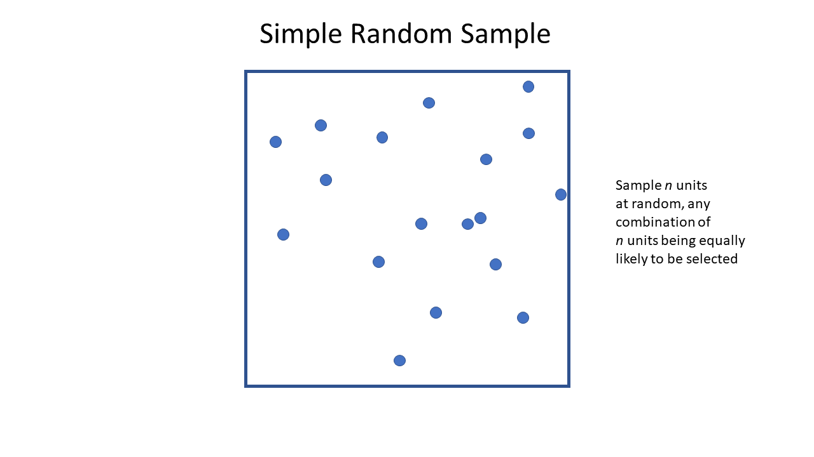
(#fig:srswor)Simple Random Sample WithOut Replacement (SRSWOR)
Example
Select \(n=5\) units from a frame listing of airports with IATA codes sourced from Kaggle https://www.kaggle.com/datasets/syedasimalishah/airports/data
The top ten rows of the dataset of \(N=6072\) are shown here:| ID | IATA | Name | City | Country | Latitude | Longitude |
|---|---|---|---|---|---|---|
| 1 | AAA | Anaa Airport | Anaa | French Polynesia | -17.352600 | -145.509995 |
| 2 | AAC | El Arish International Airport | El Arish | Egypt | 31.073299 | 33.835800 |
| 3 | AAE | Rabah Bitat Airport | Annaba | Algeria | 36.822201 | 7.809174 |
| 4 | AAF | Apalachicola Regional Airport | Apalachicola | United States | 29.727501 | -85.027496 |
| 5 | AAH | Aachen-Merzbrück Airport | Aachen | Germany | 50.823055 | 6.186389 |
| 6 | AAK | Buariki Airport | Buariki | Kiribati | 0.185278 | 173.636993 |
| 7 | AAL | Aalborg Airport | Aalborg | Denmark | 57.092759 | 9.849243 |
| 8 | AAM | Malamala Airport | Malamala | South Africa | -24.818100 | 31.544600 |
| 9 | AAN | Al Ain International Airport | Al Ain | United Arab Emirates | 24.261700 | 55.609200 |
| 10 | AAO | Anaco Airport | Anaco | Venezuela | 9.430225 | -64.470726 |
And here is a SRSWOR of \(n=5\) airports
| ID | IATA | Name | City | Country | Latitude | Longitude | bigN | weight |
|---|---|---|---|---|---|---|---|---|
| 3593 | NTD | Point Mugu Naval Air Station (Naval Base Ventura Co) | Point Mugu | United States | 34.12030 | -119.121002 | 6072 | 1214.4 |
| 1472 | EUM | Neumünster Airport | Neumuenster | Germany | 54.07944 | 9.941389 | 6072 | 1214.4 |
| 2512 | KHZ | Kauehi Airport | Kauehi | French Polynesia | -15.78080 | -145.123993 | 6072 | 1214.4 |
| 197 | ANC | Ted Stevens Anchorage International Airport | Anchorage | United States | 61.17440 | -149.996002 | 6072 | 1214.4 |
| 4710 | SRN | Strahan Airport | Strahan | Australia | -42.15500 | 145.292007 | 6072 | 1214.4 |
5.3 Simple Random Sampling With Replacement (SRSWR)
This design is rarely used, but is the simplest form of Probability Proportional to Size With Replacement (PPSWR) sampling, but with the sizes all equal.
Sampling proceeds in principle by selecting one unit at a time where each unit has a \(1/N\) chance of being selected each time. After \(n\) draws the probability a unit has been selected at least once is \[ p_i = 1 - \left(1-\frac{1}{N}\right)^n \] (This is 1 minus the chance that a unit is not selected on any of the \(n\) sampling occasions.)
If \(n\) is tiny compared to \(N\), \(p_i\) is approximately \(n/N\) which is the SRSWOR selection
probability. In practice we assign a weight of \(N/n\) to each unit as it is selected, so if unit
\(i\) is selected \(m_i\) times then it ends up with a weight of
\[
w_i = m_\frac{N}{n}
\]
If we use the approximate weights calculated in this way we have what is known as the
Hansen-Hurwitz estimator, rather than the Horwitz-Thompson estimator. However we think of
the weights in the same way and this distinction need not concern us.
Example
Here is a SRSWR of \(n=5\) airports: note that we have aggregated across any instances of multiple selections, so that in the output sample list each unit appears only once no matter how often it was selected.
bigN <- nrow(airports)
n <- 5
samp <- airports[sample(bigN,n,replace=TRUE),]
samp$weight <- bigN/n
samp <- samp |>
group_by(ID) |>
summarise(across(-weight, first), nsampled=n(), weight=sum(weight))or as a function
select.srswr <- function(df, n) {
# SRSWR
bigN <- nrow(df)
df$rownames <- 1:bigN
samp <- df[sample(bigN,n,replace=TRUE),]
samp$bigN <- bigN
samp$weight <- bigN/n
samp <- samp |>
group_by(rownames) |>
summarise(across(-weight, first), nsampled=n(), weight=sum(weight)) |>
as.data.frame() |>
ungroup() |>
select(-rownames)
return(samp)
}| ID | IATA | Name | City | Country | Latitude | Longitude | nsampled | weight |
|---|---|---|---|---|---|---|---|---|
| 805 | CCB | Cable Airport | Upland | United States | 34.11160 | -117.6880 | 1 | 1214.4 |
| 1063 | CUD | Caloundra Airport | Caloundra | Australia | -26.80000 | 153.1000 | 1 | 1214.4 |
| 1077 | CVE | Coveñas Airport | Coveñas | Colombia | 9.40092 | -75.6913 | 1 | 1214.4 |
| 2738 | LAY | Ladysmith Airport | Ladysmith | South Africa | -28.58170 | 29.7497 | 1 | 1214.4 |
| 4804 | SXN | Sua Pan Airport | Sowa | Botswana | -20.55340 | 26.1158 | 1 | 1214.4 |
5.4 Probability proportion to size Sampling (PPSWR)
This sample design generalises the SRSWR design to unequal probabilities of selection. This design recognises that some units may have more influence on our estimates because of some size property that is known (it must be on the frame). We therefore give these units higher probabilities of being selected, and therefore lower weight.
We draw \(n\) units, one at a time, but with probabilities which are proportional to the size measure \(X_i\): thus the probability of selection of unit \(i\) on each of the \(n\) draws from the population is \[ p_i = \frac{X_i}{\sum_{j=1}^N X_j} \] Approximating the probability of selection \(\pi\) after \(n\) draws as \(np_i\) leads to the sample weights \[ w_i = \frac{1}{np_i} \] In a PPSWR sample these weights are not guaranteed to add up to the population size.
Design considerations
We need to decide on:
- the size variable \(X_i\) (which must be known for every unit in the population), and
- the sample size \(n\).
The size variable \(X_i\) should correlate in some way with the population characteristics we want to estimate. If we’re interested in estimating the total economic output of businesses, then the amount of tax each business paid last year would be a good size variable. But it wouldn’t be helpful if we were interested in estimating the proportion of businesses with family friendly employment practices.
With replacement designs lose some efficiency because their estimators do not incorporate a finite population correction in their standard errors. For small sampling fractions (i.e. small \(n/N\)) this is not a significant drawback.
Example
We have a list of \(N=236\) countries and their 2023 populations: the first 10 are listed below| Country | Code | Year | Population | Prob |
|---|---|---|---|---|
| Afghanistan | AFG | 2023 | 41454762 | 0.0051249 |
| Albania | ALB | 2023 | 2811660 | 0.0003476 |
| Algeria | DZA | 2023 | 46164222 | 0.0057071 |
| American Samoa | ASM | 2023 | 47544 | 0.0000059 |
| Andorra | AND | 2023 | 80869 | 0.0000100 |
| Angola | AGO | 2023 | 36749909 | 0.0045432 |
| Anguilla | AIA | 2023 | 14435 | 0.0000018 |
| Antigua and Barbuda | ATG | 2023 | 93331 | 0.0000115 |
| Argentina | ARG | 2023 | 45538402 | 0.0056297 |
| Armenia | ARM | 2023 | 2943398 | 0.0003639 |
Select a PPSWR sample of \(n=10\) countries, with probability proportional to their population sizes.
set.seed(111)
bigN <- nrow(pop)
n <- 10
samp <- pop[sample(bigN,n,prob=pop$Prob,replace=TRUE),]
samp$weight <- 1/(n*samp$Prob)
samp <- samp |>
group_by(Country) |>
summarise(across(-weight, first), nsampled=n(), weight=sum(weight))or as a function
select.ppswr <- function(df, n, sizevar) {
# PPSWR
bigN <- nrow(df)
df$rownames <- 1:bigN
samp <- df[sample(bigN,n,prob=df[,sizevar],replace=TRUE),]
samp$bigN <- bigN
samp$weight <- bigN/n
samp <- samp |>
group_by(rownames) |>
summarise(across(-weight, first), nsampled=n(), weight=sum(weight)) |>
as.data.frame() |>
ungroup() |>
select(-rownames)
return(samp)
}| Country | Code | Year | Population | Prob | bigN | nsampled | weight |
|---|---|---|---|---|---|---|---|
| Bangladesh | BGD | 2023 | 171466986 | 0.0211977 | 236 | 1 | 23.6 |
| Brazil | BRA | 2023 | 211140731 | 0.0261023 | 236 | 1 | 23.6 |
| India | IND | 2023 | 1438069597 | 0.1777819 | 236 | 2 | 47.2 |
| Indonesia | IDN | 2023 | 281190068 | 0.0347622 | 236 | 1 | 23.6 |
| Japan | JPN | 2023 | 124370947 | 0.0153754 | 236 | 1 | 23.6 |
| Pakistan | PAK | 2023 | 247504505 | 0.0305978 | 236 | 1 | 23.6 |
| South Africa | ZAF | 2023 | 63212386 | 0.0078147 | 236 | 1 | 23.6 |
| United States | USA | 2023 | 343477330 | 0.0424625 | 236 | 2 | 47.2 |
5.5 Linear Systematic Random Sample (LSRS)
This design is often used in cases where the population is not fully enumerated, but is presented to us in the form of a queue. For example we might want to select one in ten passengers cars checking in for a ferry crossing. Another example is where there is information in the ordering of a list: for example a list might be sorted from youngest to oldest, or sorted from north to south. We can space out our sample down the list, avoiding the chance that our sample doesn’t have a good spread of ages, or a good spread of latitudes.
We select \(n\) units from \(N\) by first calculating the skip \(k\), which is the nearest integer at or below \(N/n\). We then choose at random one unit from the first \(k\) of our list or queue, say that is unit number \(j\). We then select units \(j\), \(j+k\), \(j+2k\), \(j+3k\), etc.
Selecting one unit at random in the first \(k\) (rather than just selecting the first unit, as we might naively think of doing) means that every unit in the list has a chance of selection.
The selection probabilities are \[ \pi_i = \frac{n}{N} \] and weights are \[ w_i = \frac{N}{n} \] Data from this design are often analysed as if they were drawn as a SRSWOR, but in fact this is a special case of a one-stage cluster sample (1SC, see below).
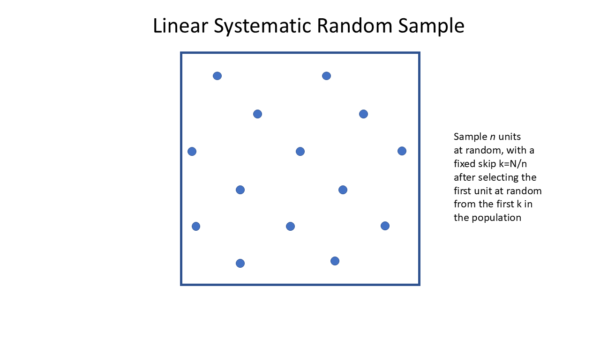
(#fig:lsrs)Linear Systematic Random Sample (LSRS)
Note that if there are \(N\) units but \(N\) is not an exact multiple of the skip \(k\), then the sample size will differ depending on which of the first \(k\) units we select to initiate sampling. For example if we wanted to select \(n=3\) units by LSRS from a list of \(N=11\) units, then the skip size is \(k=\text{floor}(11/3)=\text{floor}(3.67)=3\). If we start the process by selecting the first unit, we’d end up with the sample of 4 units, \(\{1,4,7,10\}\), but if we start by selecting the 4th unit we’d end up with only 3 units, \(\{4,7,10\}\).
Another common reason to take an LSRS is in household surveys: we’re selecting dwellings from a small area, and for reasons of confidentiality (we don’t want members of different selected households to be aware that they are both in the same survey), or to prevent collusion between neighbouring selected households, we space the sample out along the street using a LSRS to separate the selected dwellings as much as possible.
An LSRS is also a convenient way to sample if you have a printed list. After choosing the random start location among the first \(k\) units you can skip down the list at fixed intervals - something that is conventient and simple to do on a printed list.
Design considerations
- Choose a sample size \(n\)
- Consider the ordering of the list and whether units differ systematically through the list
An LSRS has one risk, and that is a periodicity in the frame that you are unaware of. For example if we are selecting apartments from a building to inspect for structural weaknesses, and select every fourth one (after a random start), we had better be sure that there aren’t exactly four apartments per floor: otherwise we’ll have inadvertently selected a column of apartments stacked one above the other, e.g. all in the north-east corner. We’ll miss any systematic issues that occur with the north-west apartments in that case.
Such unknown periodicities are unlikely in most cases, but we should be aware that they can occur.
More importantly if the list is ordered in some way, e.g. by size of location, then a LSRS guarantees a spread across the variable that defines the ordering. This can be highly desirable since we are sure to be sampling across the full diversity of the ordering variable. A good example is sampling passengers seated in an aircraft - if we take an LSRS using a list of passengers ordered by row and seat number we’ll be guaranteed to get a spread of business class, premium economy and economy class passengers in our sample.
Example
To select a LSRS of airports, let’s order the airports by latitude, and then take a LSRS of \(n=5\) units.
bigN <- nrow(airports)
airports <- airports[order(airports$Latitude),]
n <- 5
k <- floor(bigN/n)
cat("Skip size is k =",k,"\n")## Skip size is k = 1214## Starting sampling at unit 305## Actual sample size is 5select.lsrs <- function(df, n) {
# LSRS
bigN <- nrow(df)
k <- floor(bigN/n)
i0 <- sample(k,1) # first selected unit
n <- (bigN-i0)%/%k + 1 # recalculate the sample size
samp <- df[i0 + (0:(n-1))*k,]
samp$bigN <- bigN
samp$weight <- bigN/n
return(samp)
}
samp <- airports |> select.lsrs(5)| ID | IATA | Name | City | Country | Latitude | Longitude | weight |
|---|---|---|---|---|---|---|---|
| 5304 | VAO | Suavanao Airport | Suavanao | Solomon Islands | -7.58556 | 158.73100 | 1214.4 |
| 4746 | STV | Surat Airport | Surat | India | 21.11410 | 72.74180 | 1214.4 |
| 1714 | GIB | Gibraltar Airport | Gibraltar | Gibraltar | 36.15120 | -5.34966 | 1214.4 |
| 1638 | FYN | Fuyun Koktokay Airport | Fuyun | China | 46.80417 | 89.51201 | 1214.4 |
| 5277 | UTO | Indian Mountain LRRS Airport | Indian Mountains | United States | 65.99280 | -153.70399 | 1214.4 |
5.6 Stratified Simple Random Sample (STSRS)
In this design we take our population of \(N\) units and break it into \(H\) subgroups using our auxiliary data from the frame. We then draw separate samples from each of the subgroups.
To draw a stratified sample each population unit needs to be assigned in advance to one, and only one, of these subgroups - which are known as strata (singular: stratum).
There are \(N_h\) units in stratum \(h\), and all of these stratum-level population sizes add to the total population size: \[ N = \sum_{h=1}^H N_h \] Dividing both sides of this equation by \(N\) we have the stratum fractions \(F_h=N_h/N\): these are the proportions of the population that belong to the various strata, and they add up to 1: \[ 1 = \sum_{h=1}^H \frac{N_h}{N} = \sum_{h=1}^H F_h \]
For example, we can assign all residential addresses in New Zealand to exactly one of a defined set of non-overlapping regions, such as regional council areas. Or we might just have two strata: North Island, South Island (neglecting any addresses on offshore islands). There are \(N=2.4\) million addresses in New Zealand, of which \(N_1=1.72\) million in the North Island (\(F_1=0.74=74%\)) and \(N_2=0.62\) million are in the South Island (\(F_2=0.26=26%\)).
We then divide or allocate our total sample size \(n\) to the strata. Stratum \(h\) is allocated \(n_h\) units, and the total sample size is then the sum of these: \[ n = \sum_{h=1}^H n_h \] We then carry out independent sampling in each of the strata.
The way we choose to define the strata and the way we then choose to allocate the sample across the strata depend on our goals.
Stratified sampling is done for a number of reasons
Estimation Efficiency - efficiency is the word statisticians use when considering how we can get standard errors which are as small as possible.
In business surveys we often stratify because businesses differ from each other dramatically, particularly in size measures such as turnover or size of workforce. That means a small number of businesses (e.g. Spark, Air New Zealand, Fonterra) have a very large effect on estimates, and they differ dramatically from each other as well. If they happen to be included or happen to be missed from our samples that means we’d get estimates which differ very much between samples. To protect ourselves against this we stratify by business size (using tax data). The largest businesses are in the top stratum, which is small, but a census is always done of those businesses (the top stratum is called a full coverage stratum). The smallest businesses are in the lowest stratum, and they are selected with low probability: since they resemble each other more, and one can stand in for another.
Having a strata designed so that the units within the strata resemble each other strongly (one can stand in for another easily), but where units in different strata differ strongly from each other. For the same sample size as a SRSWOR stratified designs can sometimes achieve much much smaller standard errors.
Subgroup estimates - we may stratify by region because we want to make estimates for each region separately. In that case we need to ensure that our sample is large enough in each stratum to get reliable estimates. A national SRSWOR runs the risk that one region might happen to miss out on getting much sample.
Operational considerations - we may stratify by region because that is the easiest way to manage an interview workforce - we may have interviewers based in a number of regional cities, and having them interview in their local areas is the best way to organise that workforce.
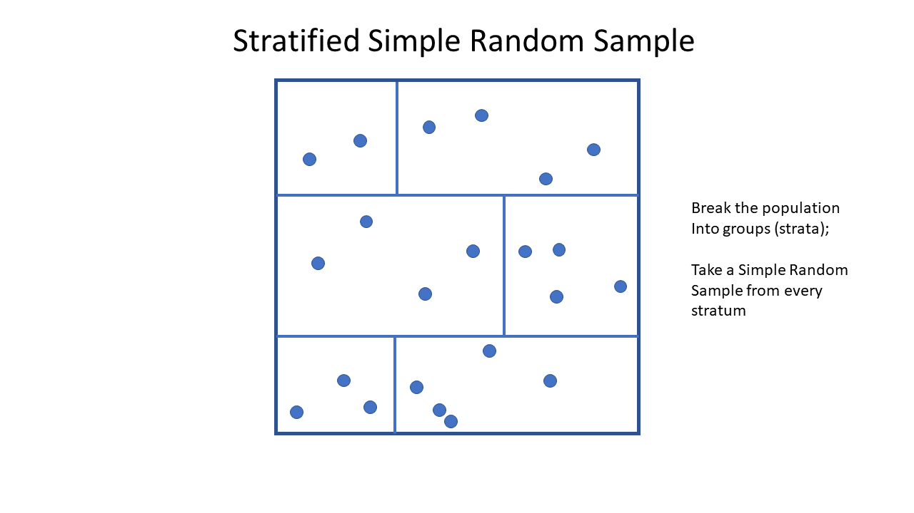
(#fig:stsrs)Stratified Simple Random Sample (STSRS)
Two common methods for allocating the \(n\) sample units across the \(H\) strata are:
Equal allocation \[ n_h = \frac{n}{H} \] Every stratum gets the same number of units allocated - independent of the stratum size. That means we get different weights in each stratum: \[ w_h = \frac{N_h}{n_h} = H\frac{N_h}{n} \] This is sensible when we want to have high precision estimates in each stratum separately.
Proportional allocation \[ n_h = nF_h = n\frac{N_h}{N} \] Here large strata get a lot of units allocated to them, and small strata get fewer units. The consequence of this design is that the weights of all units are equal, no matter which stratum they come from: \[ w_h = \frac{N_h}{n_h} = \frac{N}{n} \] This allocation is also called self weighting, and the weights are the same as in SRSWOR. (Though note: even though the weights are the same, the standard errors of estimates can differ very significantly from those from a SRSWOR.)
Design considerations
- Choose the stratification variable(s) \(X_i\), decide the number of strata \(H\), define the strata using the stratification variable(s), determine the stratum sizes \(N_h\), and stratum fractions \(F_h=N_h/N\).
- Choose the overall sample size \(n\) and allocate it across the strata.
Example
The 2026 directory of NZ schools available from https://www.educationcounts.govt.nz/directories/list-of-nz-schools
lists 2503 schools of various types (after removing Schools with zero enrolments or with incomplete data).
Each School is associated with one of \(H=12\) Education Regions, with counts \(N_h\) and stratum fractions \(F_h\)
listed below.
| \(h\) | Education Region | \(N_h\) | \(F_h\) |
|---|---|---|---|
| 1 | Bay of Plenty, Waiariki | 185 | 0.0739 |
| 2 | Canterbury, Chatham Islands | 283 | 0.1131 |
| 3 | Hawke’s Bay, Tairāwhiti | 174 | 0.0695 |
| 4 | Nelson, Marlborough, West Coast | 127 | 0.0507 |
| 5 | Otago, Southland | 228 | 0.0911 |
| 6 | Tai Tokerau | 151 | 0.0603 |
| 7 | Taranaki, Whanganui, Manawatū | 234 | 0.0935 |
| 8 | Tāmaki Herenga Manawa | 187 | 0.0747 |
| 9 | Tāmaki Herenga Tāngata | 197 | 0.0787 |
| 10 | Tāmaki Herenga Waka | 179 | 0.0715 |
| 11 | Waikato | 277 | 0.1107 |
| 12 | Wellington | 281 | 0.1123 |
We can select a stratified sample using the following function which implements an independent simple random sample within each stratum with either equal or proportional allocation.
It implements PPSWR sampling within strata as well.
select.stsrs <- function(df, n, stratumvar,
allocation="equal",
nmin=2, # minimum number of units to select per stratum
method="SRSWOR", sizevar=NULL) {
bigN <- nrow(df)
if(!stratumvar%in%names(df)) {
stop("Stratum variable is not present in the data frame")
}
stratumproperties <- as.data.frame(table(df[,stratumvar]))
names(stratumproperties) <- c(stratumvar,"Nh")
if(allocation=="equal") {
stratumproperties$nh <- pmin(stratumproperties$Nh,pmax(nmin,
round(n/nrow(stratumproperties))))
} else if(allocation=="proportional") {
stratumproperties$nh <- pmin(stratumproperties$Nh,pmax(nmin, round(n*stratumproperties$Nh/sum(stratumproperties$Nh))))
} else {
stop("Invalid allocation")
}
df <- merge(df,stratumproperties,by=stratumvar)
if(method=="SRSWOR") {
samp <- do.call(rbind, by(df, df[,stratumvar],
function(dfx) select.srswor(dfx,first(dfx$nh))))
} else if(method=="PPSWR") {
samp <- do.call(rbind, by(df, df[,stratumvar],
function(dfx) select.ppswr(dfx,first(dfx$nh),sizevar=sizevar)))
} else {
stop("Sampling method invalid")
}
return(samp)
}SRSWOR with Equal allocation
| Education Region, \(h\) | \(N_h\) | \(n_h\) | Weight, \(w_h\) | Selected Schools |
|---|---|---|---|---|
| Bay of Plenty, Waiariki | 10 | 185 | 18.5 | 482;1170;1711;1758;1787;1796;1808;1904;1929;1984 |
| Canterbury, Chatham Islands | 10 | 283 | 28.3 | 354;3304;3329;3348;3357;3389;3450;3553;3572;3586 |
| Hawke’s Bay, Tairāwhiti | 10 | 174 | 17.4 | 209;1668;1678;2566;2575;2578;2593;2657;2698;2705 |
| Nelson, Marlborough, West Coast | 10 | 127 | 12.7 | 292;294;301;3062;3071;3180;3233;3343;3690;6975 |
| Otago, Southland | 10 | 228 | 22.8 | 376;399;3737;3753;3824;3827;3943;3982;4017;4050 |
| Tai Tokerau | 10 | 151 | 15.1 | 1000;1014;1020;1039;1059;1060;1095;1104;1130;1667 |
| Taranaki, Whanganui, Manawatū | 10 | 234 | 23.4 | 2165;2167;2341;2365;2382;2416;2440;2451;2462;4123 |
| Tāmaki Herenga Manawa | 10 | 187 | 18.7 | 48;69;460;1210;1370;1376;1382;1385;1484;4133 |
| Tāmaki Herenga Tāngata | 10 | 197 | 19.7 | 32;571;767;1106;1223;1309;1394;1432;1492;6977 |
| Tāmaki Herenga Waka | 10 | 179 | 17.9 | 96;452;1201;1271;1275;1329;1339;1442;1455;4229 |
| Waikato | 10 | 277 | 27.7 | 1744;1753;1777;1790;1835;1844;2001;2008;2033;6941 |
| Wellington | 10 | 281 | 28.1 | 133;546;2742;2874;2941;2963;2967;3032;3045;3048 |
SRSWOR with proportional allocation
samp <- schools |> select.stsrs(n=120,
stratumvar="Education_Region",
allocation="proportional", sizevar="Total")| Education Region, \(h\) | \(N_h\) | \(n_h\) | Weight, \(w_h\) | Selected Schools |
|---|---|---|---|---|
| Bay of Plenty, Waiariki | 9 | 185 | 20.55556 | 145;545;558;707;1645;1745;1879;1921;1934 |
| Canterbury, Chatham Islands | 14 | 283 | 20.21429 | 328;346;531;3275;3276;3285;3412;3462;3463;3507;3540;3554;3581;4135 |
| Hawke’s Bay, Tairāwhiti | 8 | 174 | 21.75000 | 1669;2547;2574;2588;2590;2685;2702;2723 |
| Nelson, Marlborough, West Coast | 6 | 127 | 21.16667 | 300;2811;3181;3207;3231;3530 |
| Otago, Southland | 11 | 228 | 20.72727 | 384;390;3716;3719;3731;3772;3812;3826;3830;3836;3957 |
| Tai Tokerau | 7 | 151 | 21.57143 | 1029;1030;1075;1085;1116;1666;2104 |
| Taranaki, Whanganui, Manawatū | 11 | 234 | 21.27273 | 454;2157;2160;2175;2265;2336;2366;2442;2452;2475;2480 |
| Tāmaki Herenga Manawa | 9 | 187 | 20.77778 | 78;1190;1224;1240;1282;1411;1416;1515;1549 |
| Tāmaki Herenga Tāngata | 9 | 197 | 21.88889 | 45;1107;1200;1254;1311;1316;1407;1500;6759 |
| Tāmaki Herenga Waka | 9 | 179 | 19.88889 | 748;1248;1277;1332;1369;1418;1472;1559;4229 |
| Waikato | 13 | 277 | 21.30769 | 130;135;146;158;159;671;1344;1771;1891;1912;1963;2002;2013 |
| Wellington | 13 | 281 | 21.61538 | 237;258;1189;1651;2669;2818;2876;2911;3015;3022;3035;3070;3101 |
PPSWR with Equal Allocation
samp <- schools |> select.stsrs(n=120,
stratumvar="Education_Region",
allocation="equal",
method="PPSWR", sizevar="Total")| Education Region, \(h\) | \(N_h\) | \(n_h\) | Selected Schools |
|---|---|---|---|
| Bay of Plenty, Waiariki | 9 | 185 | 120;121;143;152;532;1699*;1730;1761;1766 |
| Canterbury, Chatham Islands | 10 | 283 | 310;312;327;333;335;348;3289;3407;3517;3570 |
| Hawke’s Bay, Tairāwhiti | 10 | 174 | 216;217;227;230;2445;2564;2581;2628;2677;2688 |
| Nelson, Marlborough, West Coast | 8 | 127 | 289;296*;1148;1587;3189;3208;3229;3472 |
| Otago, Southland | 9 | 228 | 369;374;376;400;533;548;586;3967*;4054 |
| Tai Tokerau | 9 | 151 | 5;8;13*;15;21;1032;1050;1113;1648 |
| Taranaki, Whanganui, Manawatū | 10 | 234 | 202;203;961;2164;2205;2346;2389;2397;2465;2477 |
| Tāmaki Herenga Manawa | 10 | 187 | 65;1190;1319;1370;1383;1402;1462;2085;3630;6760 |
| Tāmaki Herenga Tāngata | 9 | 197 | 46;725;767;1223;1304;1341;1396*;1406;1572 |
| Tāmaki Herenga Waka | 10 | 179 | 90;91;631;949;1203;1247;1423;1435;1460;1547 |
| Waikato | 9 | 277 | 126;132*;451;577;615;1693;1946;2021;3612 |
| Wellington | 10 | 281 | 240;253;255;275;276;478;498;2832;2878;3036 |
(Schools selected multiple times are indicated with a *)
5.7 One stage cluster sampling (1SC)
One stage cluster sampling superficially resembles stratified sampling. As in stratified sampling we divide the population into groups, in this case called clusters, assign each member of the population to one and only one group. However rather than sample members from each cluster, we instead draw a sample of clusters (by SRSWOR, or sometimes by PPSWR). We then take a census of each selected cluster.
In the Schools example this would could define small regions across the country, select a random sample of those regions, and then carry out a census of schools in each selected region.
Unlike stratified sampling, which is often more efficient than simple random sampling (i.e. it has smaller standard errors for the same sample size), cluster sampling is less efficient: i.e. its standard errors are worse (larger) than we’d get with a SRS with the same size.
We can see why the standard errors are worse when we consider why we take cluster samples: the reason is predominantly to controlling costs. If we want to do a household survey in a city like Wellington we could list all of the residential addresses, and then draw a simple random sample of those dwellings. That would mean having a sample that is scattered all over the city - and if we have to visit each dwelling to collect the data, then that means a lot of travelling for the interviewers: especially if they have to visit some houses multiple times to make contact with the residents. So it’s more convenient to select a set of houses on the same street and survey them - we can go from one to the next without much travel time.
The trouble is that people who live near each other tend to resemble each other: they have similar incomes, jobs, family sizes etc. That means that for each additional house you survey in a street you’re not really getting as much new information as if you were to survey an additional house somewhere else in the city.
For that reason cluster samples have to be larger than SRS to achieve the same accuracy of their estimates.
Note that it makes no sense to cluster if there is no saving to be made regarding cost or some other equivalent operational consideration. If we are doing a phone survey, where no travel at all is involved, then clustering doesn’t make any sense.

(#fig:1SC)One Stage Cluster Sample (1SC)
Our notation becomes slightly more complex here: we have \(N\) clusters, labelled \(i=1,\ldots,N\). Then in cluster \(i\) we have \(M_i\) units, labelled \(j=1,\ldots,M_i\). There is a total of \[ M = \sum_{i=1}^N M_i \] units in the population.
The selection probability of a unit is simply the probability that the cluster they are a member of is selected. So if we select clusters by SRSWOR then unit \(j\) in cluster \(i\) has selection probability \[ \pi_{ij} = \frac{n}{N} \] leading to a weight of \[ w_{ij} = \frac{N}{n} \] where again we note that \(n\) is the number of clusters selected, and \(N\) is the number of clusters in the population.
Design considerations
- We need to decide how to break our populations into clusters, and also the sizes of those clusters
- We need to choose an overall sample size.
Clusters can vary in size, so we even though we can control the number of clusters we select, we can’t control the overall sample size: we might select by chance a set of very large clusters, or a set of very small clusters.
In stratified sampling we want to make the strata as different from
one another as possible, and to be as internally homogeneous.
In cluster sampling it’s the reverse situation: we want our clusters to be internally
diverse, and for that diversity to be present as far as possible within
every cluster. This is because we’re only selecting a few clusters, and
they have to stand in for all of the unselected clusters. So they’d better
reflect the full population diversity.
Example
There are \(N=87\) Territorial Authorities (TAs) in New Zealand (these are local government districts). Each TA has \(M_i\) schools, so the total number of schools in the population is \[ M = \sum_{i=1}^N M_i \] We could select a SRS of \(n=10\) TAs and then do a census of the Schools in each selected TA. Here \(n\) is the sample size of clusters, not the sample size of schools. If cluster \(i\) contains \(M_i\) schools then the total number of schools selected is \[ m = \sum_{i\in\text{sample}} M_i \]
A function to do this selection in R is:
select.1sc <- function(df, n, clustervar,
method="SRSWOR", sizevar=NULL) {
bigM <- nrow(df)
if(!clustervar%in%names(df)) {
stop("Cluster ID variable is not present in the data frame")
}
clusterproperties <- as.data.frame(table(df[,clustervar]))
names(clusterproperties) <- c(clustervar,"Mi")
if(method=="SRSWOR") {
sampcluster <- clusterproperties |>
select.srswor(n=n)
} else if(method=="PPSWR") {
sampcluster <- clusterproperties |>
select.ppswr(n=n, sizevar="Mi")
} else {
stop("Sampling method invalid")
}
samp <- merge(df,sampcluster,by=clustervar)
return(samp)
}| Territorial Authority, \(i\) | \(M_i\) | Selected Schools |
|---|---|---|
| Hamilton City | 59 | 129;130;131;132;135;136;138;139 … |
| Kawerau District | 4 | 651;655;661;1770 |
| Manawatu District | 26 | 197;199;2333;2338;2341;2354;2356;2360 … |
| Ruapehu District | 22 | 169;176;183;1617;1845;1847;1961;1982 … |
| Timaru District | 28 | 352;354;357;358;359;360;361;1611 … |
| Wairoa District | 14 | 214;1616;1668;1669;1675;1676;1677;1678 … |
| Waitematā Local Board Area | 21 | 48;50;51;53;62;921;1210;1220 … |
| Western Bay of Plenty District | 25 | 117;123;1185;1717;1758;1765;1794;1811 … |
| Whau Local Board Area | 24 | 42;78;83;84;781;941;1206;1212 … |
| Ōtorohanga District | 12 | 157;1688;1736;1771;1779;1783;1793;1853 … |
5.8 Two stage cluster sampling (2SC)
The obvious drawback of the One Stage cluster design is that we are getting a lot of information from clusters which may be very homogeneous. This drives the inefficiency of the design: we’re wasting a lot of our sampling effort.
An obvious solution is to select a set of clusters, and then only take a sample of units within those clusters, rather than sampling all of them.
This breaks the sample design into two stages
- Stage 1 - select a set of clusters, which we refer to as Primary Sampling Units (PSUs);
- Stage 2 - select a set of units within the selected clusters. These units are called Secondary Sampling Units (SSUs).
Sampling at both stages can be by any method, though SRSWOR or PPSWR are the most common.
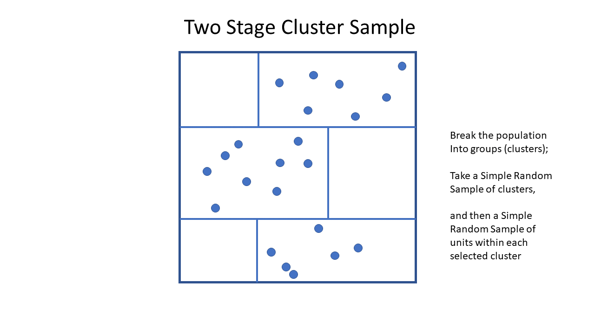
(#fig:2SC)Two Stage Cluster Sample (2SC)
We use the same notation as in one stage clustering: there are \(N\) PSUS of which select \(n\), and in PSU \(i\) there are \(M_i\) PSUs, of which we select \(m_i\). The total number of SSUs is in all of the PSUs in the population is \[ M = \sum_{i=1}^N M_i \] whereas the total sample size of SSUs is \[ m = \sum_{i\in\text{Sample}} m_i \] where we just sum over the selected PSUs.
If we use SRSWOR and select \(n\) PSUs from the \(N\) available then the probability of selection of a PSU is \[ \pi^{(1)}_i= \Pr(\text{PSU $i$ is selected}) = \frac{n}{N} \] leading to the first stage weight of \[ w^{(1)}_i = \frac{1}{\pi^{(1)}_i} = \frac{N}{n} \] If PSU \(i\) is selected we then select \(m_i\) units (SSUs) out of the \(M_i\) available. The probability that SSU \(j\) is selected given that PSU \(i\) has been selected is \[ \pi^{(2)}_{ij}= \Pr(\text{SSU $j$ is selected given that PSU $i$ was selected}) = \frac{m_i}{M_i} \] leading to the second stage weight of \[ w^{(2)}_{ij} = \frac{1}{\pi^{(2)}_{ij}} = \frac{M_i}{m_i} \] The overall probability that SSU \(j\) in PSU \(i\) is selected is the product of the first and second stage selection probabilities: \[ \pi_{ij} = \pi^{(1)}_i \pi^{(2)}_{ij} = \frac{n}{N}\times\frac{m_i}{M_i} \] and its overall weight is the product of the first and second stage weights \[ w_{ij} = w^{(1)}_i w^{(2)}_{ij} = \frac{N}{n}\times\frac{M_i}{m_i} \]
For example I might have \(N=100\) small areas covering Wellington, and I select \(n=10\) of them. Then in one of those selected areas there might be \(M_i=120\) houses, of which I select \(m_i=15\). The first and second stage probabilities are \[ \pi^{(1)}_i = \frac{10}{100} = 0.100 \qquad \text{and} \qquad \pi^{(2)}_{ij} = \frac{15}{120} = 0.125 \] So the chances that a house in PSU \(i\) is selected is \[ \pi_{ij} = (0.100)(0.125) = 0.0125 \] with total weight \[ w_{ij} = \frac{100}{10}\times\frac{120}{15} = 10\times 8 = 80 \]
There are two special cases of two stage clustering which reduce to simpler designs
- A first stage census: \(n=N\): we sample from every PSU. This is equivalent to stratified sampling, where we sample from every stratum.
- A second stage census: \(m_i=M_i\): we take a census of all SSUs in each selected cluster. This is equivalent to one stage clustering.
Design considerations
We have a lot of decisions to make:
- How many PSUs (clusters) \(N\), and how we define them
- The number of PSUs to select \(n\)
- The number of SSUs to select within each selected PSU. Rather than state the sample size \(m_i\) for each cluster, this is often specified as the proportion of the cluster size we’ll select. e.g. we might select 1 in 10 of the SSUs.
Example
Let’s return to the schools example. We’ll select \(n=10\) TAs, but then select 20% of the schools in each selected TA - although we’ll also ensure we have at least 2 schools in each selected cluster.
A function to do this selection in R is:
select.2sc <- function(df, n, # number of first stage clusters to select
cfraction, clustervar,
mmin=2, # minimum number of 2nd stage clusters to select
method1="SRSWOR", sizevar1=NULL,
method2="SRSWOR", sizevar2=NULL) {
bigM <- nrow(df)
if(!clustervar%in%names(df)) {
stop("Cluster ID variable is not present in the data frame")
}
clusterproperties <- as.data.frame(table(df[,clustervar]))
bigN <- nrow(clusterproperties)
names(clusterproperties) <- c(clustervar,"Mi")
if(method1=="SRSWOR") {
sampcluster <- clusterproperties |>
select.srswor(n=n)
} else if(method1=="PPSWR") {
sampcluster <- clusterproperties |>
select.ppswr(n=n, sizevar="Mi")
} else {
stop("First stage sampling method invalid")
}
sampcluster$mi <- pmin(sampcluster$Mi,pmax(mmin,round(cfraction*sampcluster$Mi)))
samp1 <- merge(df,sampcluster,by=clustervar)
samp1 <- samp1 |> rename(bigN1=bigN,weight1=weight)
samp1$n1 <- n
# Second stage selection
if(method2=="SRSWOR") {
samp2 <- do.call(rbind,
by(samp1, samp1[,clustervar],
function(ds) select.srswor(ds,n=first(ds$mi))
))
} else if(method2=="PPSWR") {
samp2 <- do.call(rbind,
by(samp2, samp2[,clustervar],
function(ds) select.ppswr(ds,n=first(ds$mi),sizevar=sizevar2)
))
} else {
stop("Second stage sampling method invalid")
}
samp2 <- samp2 |> rename(bigN2=bigN,weight2=weight)
samp2$n2 <- samp2$mi
samp2$weight <- samp2$weight1*samp2$weight2
return(samp2)
}| Territorial Authority, \(i\) | \(N\) | \(n\) | \(M_i\) | \(m_i\) | \(w^{(1)}_i\) | \(w^{(2)}_{ij}\) | Weight, \(w_{ij}\) | Selected Schools |
|---|---|---|---|---|---|---|---|---|
| Masterton District | 87 | 10 | 20 | 4 | 8.70 | 5.00 | 43.50 | 244;1660;2843;2909 |
| Nelson City | 87 | 10 | 22 | 4 | 8.70 | 5.50 | 47.85 | 293;294;3221;4121 |
| Queenstown-Lakes District | 87 | 10 | 16 | 3 | 8.70 | 5.33 | 46.40 | 746;747;958 |
| Tasman District | 87 | 10 | 35 | 7 | 8.70 | 5.00 | 43.50 | 292;296;3180;3203 … |
| Timaru District | 87 | 10 | 28 | 6 | 8.70 | 4.67 | 40.60 | 2109;3498;3528;3533 … |
| Waimate District | 87 | 10 | 9 | 2 | 8.70 | 4.50 | 39.15 | 3519;3574 |
| Waitematā Local Board Area | 87 | 10 | 21 | 4 | 8.70 | 5.25 | 45.67 | 48;921;1392;2085 |
| Waitomo District | 87 | 10 | 17 | 3 | 8.70 | 5.67 | 49.30 | 1778;2073;2267 |
| Whanganui District | 87 | 10 | 40 | 8 | 8.70 | 5.00 | 43.50 | 422;1585;2361;2412 … |
| Whangarei District | 87 | 10 | 54 | 11 | 8.70 | 4.91 | 42.71 | 13;620;1015;1017 … |
5.9 Complex multistage designs
The ideas in two stage cluster sampling can be extended to a third stage of sampling (i.e. we may wish to sample within SSUs), and we can also combine cluster sampling with stratified sampling.
For example, the Statistics NZ Household sampling frame is a multistage cluster design, where the sample is selected as follows:
- NZ is stratified into \(H=12\) regions (e.g. Northland, Auckland, Hawke’s Bay etc.);
- Each stratum (region) is broken into \(N_h\) PSUs - small areas that
contain (on average) about 100 households.
A PPSWR of \(n_h\) PSUs is taken within each stratum \(h\); (First stage sample.) - Within the \(k^{\rm th}\) selected PSU, which is of size \(M_{hk}\), a linear systematic random sample is taken of \(m_{hk}\) households; (Second stage sample.)
- Depending on the survey, all \(A_{hk\ell}\) eligible members of the \(\ell^{\rm th}\) selected household will be surveyed, or a SRSWOR of \(a_{hk\ell}\) members may be taken. (Third stage sample.)
The sample size is therefore \[ \text{Sample Size} = \sum_{h=1}^H\sum_{k\in s_I}\sum_{\ell\in s_k} a_{hk\ell} \] and the sample weights of individual \(j\) in household \(\ell\) of PSU \(k\) in stratum \(h\) are \[ w_{hk\ell j} = \frac{N_h}{n_h}\frac{M_{hk}}{m_{hk}} \frac{A_{hk\ell}}{a_{hk\ell}} \] i.e. these are just the product of the weights at each stage of selection.
Function to draw a stratified two stage cluster sample
select.st2sc <- function(df,
n, # total number of 1st stage clusters to select over all strata
stratumvar, allocation="equal",
nmin=2, # minimum number of 1st stage clusters to select per stratum
cfraction, clustervar,
mmin=2, # minimum number of 2nd stage clusters to select
method1="SRSWOR", sizevar1=NULL,
method2="SRSWOR", sizevar2=NULL) {
# stratum selection
bigN <- nrow(df)
if(!stratumvar%in%names(df)) {
stop("Stratum variable is not present in the data frame")
}
if(!clustervar%in%names(df)) {
stop("Clustring variable is not present in the data frame")
}
xx <- tapply(df[,clustervar], df[,stratumvar], function(x) length(unique(x)))
stratumproperties <- data.frame(Var1=names(xx),Freq=xx)
names(stratumproperties) <- c(stratumvar,"Nh")
rownames(stratumproperties) <- NULL
if(allocation=="equal") {
stratumproperties$nh <- pmin(stratumproperties$Nh,pmax(nmin,
round(n/nrow(stratumproperties))))
} else if(allocation=="proportional") {
stratumproperties$nh <- pmin(stratumproperties$Nh,pmax(nmin,
round(n*stratumproperties$Nh/sum(stratumproperties$Nh))))
} else {
stop("Invalid allocation")
}
df <- merge(df,stratumproperties,by=stratumvar)
samp <- do.call(rbind, by(df, df[,stratumvar],
function(dfx) {
select.2sc(dfx, n=first(dfx$nh),
cfraction=cfraction,
clustervar=clustervar,
mmin=mmin,
method1=method1, sizevar1=sizevar1,
method2=method2, sizevar2=sizevar2)
}))
return(samp)
}samp <- schools |> select.st2sc(n=30, stratumvar="Region", allocation="proportional",
cfraction=0.20, clustervar="Territorial_Authority")First 10 of the selected first stage clusters:
## `summarise()` has grouped output by 'Region'. You can override using the
## `.groups` argument.| Region, \(h\) | Territorial Authority, \(i\) | \(N_h\) | \(n_h\) | \(M_{hi}\) | \(m_{hi}\) | \(w^{(1)}_i\) | \(w^{(2)}_{ij}\) | Weight, \(w_{ij}\) | Selected Schools |
|---|---|---|---|---|---|---|---|---|---|
| Auckland Region | Aotea/Great Barrier Local Board Area | 21 | 7 | 3 | 2 | 3.00 | 1.50 | 4.50 | 1385;1398 |
| Auckland Region | Devonport-Takapuna Local Board Area | 21 | 7 | 24 | 5 | 3.00 | 4.80 | 14.40 | 36;1221;1242;1498 … |
| Auckland Region | Kaipātiki Local Board Area | 21 | 7 | 25 | 5 | 3.00 | 5.00 | 15.00 | 1222;1230;1395;1400 … |
| Auckland Region | Maungakiekie-Tāmaki Local Board Area | 21 | 7 | 29 | 6 | 3.00 | 4.83 | 14.50 | 86;604;1351;1420 … |
| Auckland Region | Māngere-Ōtāhuhu Local Board Area | 21 | 7 | 35 | 7 | 3.00 | 5.00 | 15.00 | 90;544;630;1215 … |
| Auckland Region | Puketāpapa Local Board Area | 21 | 7 | 21 | 4 | 3.00 | 5.25 | 15.75 | 63;1302;1305;1548 |
| Auckland Region | Waitākere Ranges Local Board Area | 21 | 7 | 14 | 3 | 3.00 | 4.67 | 14.00 | 279;1285;1311 |
| Bay of Plenty Region | Whakatane District | 6 | 2 | 32 | 6 | 3.00 | 5.33 | 16.00 | 144;221;1755;1854 … |
| Bay of Plenty Region | Ōpōtiki District | 6 | 2 | 13 | 3 | 3.00 | 4.33 | 13.00 | 1806;1861;2084 |
| Canterbury Region | Ashburton District | 9 | 3 | 23 | 5 | 3.00 | 4.60 | 13.80 | 3274;3282;3283;3336 … |
6 Sample Designs in R
\(\DeclareMathOperator*{\argmin}{argmin}\) \(\newcommand{\var}{\mathrm{Var}}\) \(\newcommand{\bfa}[2]{{\rm\bf #1}[#2]}\) \(\newcommand{\rma}[2]{{\rm #1}[#2]}\) \(\newcommand{\estm}{\widehat}\)
The method of anlalysis of survey data depends crucially on its sample design. Simple methods of analysis which neglect the sample design can lead to estimates which are severely biased, and standard errors that are incorrect.
In the this and the following Chapter we’ll use the survey package in R to carry out analyses.
We’ll use the schools data set as our primary example, but also use
data on populations and Gross Domestic Product for each country in 2023
from the ‘Our World in Data’ website.
# Census
schools.census <- schools |> select.srswor(n=nrow(schools))
# SRSWOR
schools.srswor <- schools |> select.srswor(n=20)
# PPSWR
schools.ppswr <- schools |> select.ppswr(n=20, sizevar="Total")
# STSRS
schools.stsrs <- schools |> select.stsrs(n=60, stratumvar="Education_Region")
# 1SC
schools.1sc <- schools |> select.1sc(n=10, clustervar="Territorial_Authority")
# 2SC
schools.2sc <- schools |> select.2sc(n=10, cfraction=0.20, mmin=2,
clustervar="Territorial_Authority")
# ST2SC
schools.st2sc <- schools |> select.st2sc(n=30, stratumvar="Region", allocation="proportional",
cfraction=0.20, clustervar="Territorial_Authority")In order to make estimates from sampled data using the survey package
we need to specify the sample design we’re using.
We’ll do this for the various sample designs covered in the
previous chapter.
Note that in the
surveypackage we identify variables with their names without quotes and with a~symbol in front. (If you’re interested you can use thesurvyrpackage which is adplyr-like wrapper forsurveywith functions defined so that the~isn’t necessary.)
We’ll define each design, and then use it to estimate the mean
size of school rolls in the population (stored in the variable Total in
the schools data frame. (One exception will be the PPSWR example
where we’ll select a sample of countries using their population size
as the size variable.)
The true mean school size is
## [1] 334.4816.1 Census
The analysis of a census is trivial (at least, if there is no non-response). We can create a census dataset by taking an SRSWOR of size \(n=N\).
This function adds the column bigN to the dataset, which contains
population size \(N\) repeated on every row.
Now we can specify the design.
Note that we tell R which column contains the population size using the fpc argument.
Our data aren’t clustered, so the id variable (which identifies clusters) is set to 1.
## mean SE DEff
## Total 334.48 0.00 NaNThe estimated mean is 334.48, which is of course exactly equal to the population mean - and note that the standard error is zero: censuses have no sampling error. We’ve measured everything there is to measure so we have no uncertainty.
We’ve requested Deff=TRUE, and have got a Deff value of NaN, which means
not able to be calculated. We’ll discuss what this means later on.
If we had left out the fpc command
## Warning in svydesign.default(id = ~1, data = schools.census): No weights or
## probabilities supplied, assuming equal probabilitywe get a warning that we can interpret as R assuming an SRSWR from an infinite population.
The estimated mean is the same, but the standard error are now what’d we’d have learned from first year statistics.
## mean SE DEff
## Total 334.4810 8.4582 Infi.e. the standard error is \[ \bfa{SE}{\widehat{\bar{Y}}} = \frac{s_y}{\sqrt{n}} = \frac{423.162}{\sqrt{2503}} = 8.458 \]
Also notice that the Deff value has changed to Inf (meaning infinity) -
again we’ll come back to what this means this shortly.
6.2 Simple Random Sample WithOut Replacement (SRSWOR)
Let’s draw a sample of \(n=60\) schools from the population by SRSWOR.
To specify the design we use the same syntax as above:
Estimating the mean school size is also just the same:
## mean SE DEff
## Total 347.367 49.582 1This is the mean of a genuine sample now, so we have an estimated mean value that differs from the truth, and the standard error is gauge of its accuracy.
The standard error comes from the finite population corrected formula:
bigN <- first(schools.srswor$bigN) # take the entry in the first row: they're all the same
sy <- sd(schools.srswor$Total)
n <- nrow(schools.srswor)
se <- sqrt(1-n/bigN)*sy/sqrt(n)\[ \bfa{SE}{\widehat{\bar{Y}}} = \sqrt{1-\frac{n}{N}}\frac{s_y}{\sqrt{n}} = \sqrt{1-\frac{60}{2503}} \frac{388.745}{\sqrt{60}} = 49.582 \]
Compare this to the simple SE, which is just slightly bigger
\[
\bfa{SE}{\widehat{\bar{Y}}}
= \frac{s_y}{\sqrt{n}}
= \frac{388.745}{\sqrt{60}} = 50.187
\]
This is what we get if we omit the fpc
## Warning in svydesign.default(id = ~1, data = schools.srswor): No weights or
## probabilities supplied, assuming equal probability## mean SE DEff
## Total 347.367 50.187 Inf6.3 Probability Proportional to Size With Replacement (PPSWR)
We have a dataset from ‘Our World in Data’ giving population sizes, Gross Domestic Product and military expenditure in 2023 (all in US dollars). The first 10 rows are below:| Country | Code | GovtSpend | GDP | Region | Population | GDPPerCapita | MilSpend |
|---|---|---|---|---|---|---|---|
| Albania | ALB | 1863822443 | 1.496298e+10 | Europe | 2811660 | 5321.759 | 397617600 |
| Algeria | DZA | 44321604142 | 2.151440e+11 | Africa | 46164222 | 4660.405 | 18263968000 |
| Angola | AGO | 15741572839 | 1.032363e+11 | Africa | 36749909 | 2809.157 | 1247846300 |
| Argentina | ARG | 111098899281 | 5.916847e+11 | South America | 45538402 | 12993.093 | 4882353000 |
| Armenia | ARM | 1598415044 | 1.540616e+10 | Asia | 2943398 | 5234.142 | 1326245800 |
| Australia | AUS | 385802798739 | 1.649425e+12 | Oceania | 26451126 | 62357.456 | 32387990000 |
| Austria | AUT | 84758230499 | 4.246078e+11 | Europe | 9130434 | 46504.669 | 4452228000 |
| Azerbaijan | AZE | NA | 5.755883e+10 | Asia | 10318209 | 5578.374 | 3561670700 |
| Bahrain | BHR | 6908975351 | 3.996681e+10 | Asia | 1569674 | 25461.855 | 1622393700 |
| Bangladesh | BGD | 18377804014 | 3.232800e+11 | Asia | 171466986 | 1885.377 | 3782793000 |
We can select a PPSWR using population as the size variable
The weight column here combines the weight over the number of times a unit is selected
The mean military expenditure per country is
## mean SE DEff
## MilSpend 7.4657e+10 3.4650e+10 1.0362though more interesting is the total of this variable, to see how much the world is spending.
## total SE DEff
## MilSpend 1.1199e+13 5.3452e+12 1.096Note again that in a with replacement design we can’t apply the finite population correction.
6.4 Stratified Sample
Recall that in this design we specify a set of groups called strata, and each population unit belongs to one of these strata.
Selecting a sample of \(n=60\) schools by equal allocation across the 12 Education Regions:
Specify this design
schools.stsrs.des <- svydesign(id=~1, strata=~Education_Region, fpc=~Nh,
data=schools.stsrs,
survey.lonely.psu="remove")Note that we’ve included the option survey.lonely.psu="remove" to mean
that the estimation of standard errors doesn’t fail if a stratum only has a single
PSU.
We can now return to estimating the mean school size
## mean SE DEff
## Total 337.235 39.972 0.6816Now it’s finally time to talk about the Design Effect, or the Deff for short.
The Deff of an estimator \(\widehat{T}\) of a population characteristic \(T\) in a particular sample design is defined to be \[ \bfa{Deff}{\widehat{T}_{\text{design}}} = \frac{\bfa{Var}{\widehat{T}_{\text{design}}}}{ \bfa{Var}{\widehat{T}_{\text{SRSWOR}}}} = \left(\frac{\bfa{SE}{\widehat{T}_{\text{design}}}}{ \bfa{SE}{\widehat{T}_{\text{SRSWOR}}}}\right)^2 \] where both estimators are based on samples of the same size.
It tells us how the standard error differs between our design of interest and a SRSWOR of the same sample size.
Note that
- We have a different Deff for every estimate we make from a survey.
- A Deff$<$1 means that the Standard Errors are smaller than what we’d get in SRSWOR. A small Deff indicates a more efficient design.
- A Deff of 1 means the design is no better than SRSWOR - and of course (look back above) the Deffs of all estimates in SRSWOR are 1 by definition.
- If we’re dealing with a census, then the Standard Error is zero, and in any case there’s no difference between designs, so the Deff isn’t defined.
- Stratified designs can achieve Deffs much much less than 1 if their strata are well defined to be informative about the estimates of interest. e.g. in business surveys where the strata are defined by business size we can get very good Deffs.
- Cluster designs often have Deffs greater than 1, which show them to be significantly less efficient than SRSWOR.
The Deff values we get from R are approximations, and aren’t very reliable when sample sizes are small. But do notice that we have a Deff<1 here for the stratified sample of \(n=60\) units, and the SE is lower than that achieved in the SRSWOR of \(n=60\) units above.
6.5 One stage cluster design (1SC)
A one stage cluster design takes \(n=10\) Territorial Authority areas (TAs) at random and selects all schools in each selected TA.
We need a column bigN which gives the number of TAs in the population.
## mean SE DEff
## Total 287.197 43.829 5.7634The Deff of this one stage cluster sample is bad (much larger than 1) - this is due to strong differences between TAs in the mean school size. The more the clusters differ from each other on the characteristic of interest, the worse the Deff gets.
6.6 Two stage cluster design (2SC)
A two stage cluster design takes \(n=10\) Territorial Authority areas (TAs) at random and selects 20% of the schools in each selected TA.
schools.2sc <- schools |> select.2sc(n=10, cfraction=0.20, mmin=2,
clustervar="Territorial_Authority")We need a column bigN1 which gives the number of TAs in the population, and
bigN2 which is the number of schools in each TA. We also need to specify names
of unique identifiers of the first stage units (the PSUs: these are Territorial Authorities)
and the second stage units (the SSUs: these are Schools).
schools.2sc.des <- svydesign(id=~Territorial_Authority+School_Id, data=schools.2sc,
fpc=~bigN1+bigN2,
survey.lonely.psu="remove")## mean SE DEff
## Total 486.981 84.261 2.17396.7 Stratified two stage cluster design
Finally here is a stratified two stage sample of schools within TA’s with Regions. The Regions are strata, the TAs are clusters within the Regions, and then 20% of schools are sampled in the selected TAs.
schools.st2sc <- schools |> select.st2sc(n=30, stratumvar="Region", allocation="proportional",
cfraction=0.20, clustervar="Territorial_Authority")The design is the same as the two stage cluster sample, except we add the stratum specification.
schools.st2sc.des <- svydesign(id=~Territorial_Authority+School_Id, strata=~Region, data=schools.st2sc,
fpc=~bigN1+bigN2,
survey.lonely.psu="remove")## mean SE DEff
## Total 295.326 25.898 1.2487 Survey Analysis
\(\DeclareMathOperator*{\argmin}{argmin}\) \(\newcommand{\var}{\mathrm{Var}}\) \(\newcommand{\bfa}[2]{{\rm\bf #1}[#2]}\) \(\newcommand{\rma}[2]{{\rm #1}[#2]}\) \(\newcommand{\estm}{\widehat}\)
Key functions
Survey design svydesign() and summary()
Estimation
Continuous variables svymean() svytotal() svytable()
confint() for confidence intervals cv() for RSE’s
Categorical variables give proportions svymean() svytotal() svyciprop() for better confidence intervals
svyby()
Inference
svychisq() svytest() svyranktest() svyglm() regTermTest() svypredmeans()
Display
barplot() svyhist() svyboxplot() dotchart() svyplot() Data display and inference
Analytic and jackknife methods
- SRSWOR, SRSWR
- Stratified designs
- Cluster designs
- PPSWR
- Complex designs
8 Missing data
Origin of missing data
Calibration for unit non-response
- Poststratification
Imputation for item non-response
9 Designing Surveys
9.1 Design variables
To a rough approximation the variance of an estimator reduces with a factor of \(1/n\) where \(n\) is the sample size.
That means the ratio of variances …
9.2 Computing the Required Sample Size
Identify your design estimate – this is the estimate that will underlie a headline you could imagine being written about your survey.
Identify the desired MOE, \(m\), for this design estimate, noting whether you want this MOE to apply to the overall estimate, or for that estimate in each of, say, \(H\) subgroups/strata.
Compute the sample size required, \(n_1\), assuming that you’re going to select a Simple Random Sample and ignoring the fpc.
For estimation of a mean \(\bar{Y}\) of some characteristic \(y\): \[ n_1 = \left(\frac{Z}{MOE}\right)^2 s^2 \] where \(Z\) is appropriate for the desired level of confidence and \(s\) is the estimated population standard deviation of the characteristic \(y\).
For estimation of a proportion \(P\): \[ n_1 = \left(\frac{Z}{MOE}\right)^2 p(1-p) \] where \(p\) is the estimated proportion, or 0.5 if really unknown.
If the sample size is a substantial proportion of the population or subgroup size \(N\), then apply the fpc adjustment: \[ n_2 = \frac{n_1}{1+\frac{n_1}{N}} \]
If you have \(H\) subgroups and are using equal allocation then multiply by \(H\) \[ n_3 = Hn_2 \] or alternatively sum over the \(n_2\) values in each of the strata you’ve defined.
Apply the design effect (Deff) appropriate for the actual design you’ll be using. \[ n_4 = \text{Deff}\times n_3 \]
Adjust for anticipated non-response: if response rate \(\phi\) is expected then \[ n_5 = \frac{n_4}{\phi} \] (If non-response is likely to vary between strata, then apply this correction to \(n_2\), within each stratum.)